Gross vs. Microscopic Hematuria — Two Very Different ProblemsGross vs. Microscopic Hematuria — Dalawang Magkaibang ProblemaGross vs. Microscopic Hematuria — Duha ka Lain-laing Problema Gross vs. Microscopic Hematuria — Dalawang Magkaibang Problema
The first question is not why there is blood in your urine — it is how much. Gross hematuria (visible to the naked eye) and microscopic hematuria (only detectable on urinalysis) have very different causes, different urgency, and different workup paths. Assuming they are the same thing is the most common mistake patients and even some clinicians make.Ang unang tanong ay hindi bakit may dugo sa inyong ihi — kundi magkano. Ang gross hematuria (nakikita ng mata) at microscopic hematuria (natutuklas lamang sa urinalysis) ay may magkaibang sanhi, pagkaapurahan, at mga landas ng pagsusuri. Ang pag-aakala na sila ay iisa ang pinakakaraniwang pagkakamali ng mga pasyente at maging ng ilang klinisyan.Ang unang pangutana dili nganong adunay dugo sa imong ihi — kondili pila ka dami. Ang gross hematuria (makita sa mata) ug microscopic hematuria (makita lamang sa urinalysis) adunay lain-laing hinungdan, lain-laing pagkaapura, ug lain-laing mga dalan sa pagsusi. Ang pag-anggon nga sila usa ra ang labing kasagarang sayop sa mga pasyente ug bisan sa pipila ka klinisyan. Ing unang tanong ya ali bakit atin daya king inyu ihi — kundi magkano. Ing gross hematuria (nakikita ning mata) at microscopic hematuria (natutuklas lamang king urinalysis) ya atin magkaibang sanhi, pagkaapurahan, at deng landas ning pagsusuri. Ing pag-aakala a sila ya iisa ing pinakakaraniwang pagkakamali ning deng pasyente at maging ning ilang klinisyan.
Gross HematuriaGross HematuriaGross Hematuria Gross Hematuria
Visible red, pink, or brown urine — enough blood to change the color. It only takes 1 mL of blood in 1 liter of urine to turn it visibly red. This is never normal in an adult and always requires evaluation.Nakikitang pula, rosas, o kayumangging ihi — sapat na dugo para baguhin ang kulay. 1 mL lamang ng dugo sa 1 litro ng ihi ang kailangan para maging pula ito sa mata. Ito ay hindi kailanman normal sa isang matanda at palaging nangangailangan ng pagsusuri.Makita nga pula, rosas, o brown nga ihi — igo nga dugo aron mabag-o ang kolor. 1 mL lamang sa dugo sa 1 litro sa ihi ang kinahanglan aron mahimong pula kini sa mata. Kini dili gayud normal sa usa ka hamtong ug kanunay nagkinahanglan og pagsusi. Nakikitang pula, rosas, o kayumangging ihi — sapat a daya para baguhin ing kulay. 1 mL lamang ning daya king 1 litro ning ihi ing kailangan para maging pula ini king mata. Ini ya ali kailanman normal king metung a matanda at papirming nangangailangan ning pagsusuri.
- May be painless (bladder cancer, IgAN) or painful (stones, infection)Maaaring walang sakit (kanser sa pantog, IgAN) o may sakit (bato, impeksyon)Mahimong walay sakit (kanser sa pantog, IgAN) o may sakit (bato, impeksyon) Maaaring alang sakit (kanser king pantog, IgAN) o atin sakit (batu, impeksyon)
- Clots in urine suggest a significant upper or lower urinary tract sourceAng mga clot sa ihi ay nagmumungkahi ng makabuluhang pinagmulan mula sa itaas o ibabang urinary tractAng mga clot sa ihi nagsugyot sa makisog nga gigikanan gikan sa taas o ubos nga urinary tract Ing deng clot king ihi ya nagmumungkahi ning makabuluhang pinagmulan mula king itaas o ibabang urinary tract
- Single episode still warrants full workup, especially age >40Ang isang episode ay nangangailangan pa rin ng kumpletong pagsusuri, lalo na sa edad na higit sa 40Ang usa ka episode nagkinahanglan pa gihapon og kumpletong pagsusi, ilabi na sa edad nga labaw sa 40 Ing metung a episode ya nangangailangan pa rin ning kumpletong pagsusuri, lalo a king edad a higit king 40
- Brown or cola-colored urine often means blood has been present longer — or points to glomerular origin (dysmorphic RBCs)Ang kayumanggi o cola-kulay na ihi ay kadalasang nangangahulugang mas matagal na ang dugo — o nagtuturo sa glomerular na pinagmulan (dysmorphic RBCs)Ang brown o cola-kolor nga ihi kasagaran nagpasabot nga mas dugay na ang dugo — o nagtudlo sa glomerular nga gigikanan (dysmorphic RBCs) Ing kayumanggi o cola-kulay a ihi ya kadalasang nangangahulugang mas matagal a ing daya — o nagtuturo king glomerular a pinagmulan (dysmorphic RBCs)
Microscopic HematuriaMicroscopic HematuriaMicroscopic Hematuria Microscopic Hematuria
≥3 RBCs per high-power field (HPF) on properly spun mid-stream urine — invisible to the eye. Often discovered incidentally on routine urinalysis.≥3 RBC bawat high-power field (HPF) sa wastong pinaikot na mid-stream urine — hindi nakikita ng mata. Madalas na natutuklasan nang hindi sinasadya sa routine urinalysis.≥3 RBC matag high-power field (HPF) sa hustong gipaikot nga mid-stream urine — dili makita sa mata. Sagad nakit-an sa walay tuyo sa routine urinalysis. ≥3 RBC bawat high-power field (HPF) king wastong pinaikot a mid-stream urine — ali nakikita ning mata. Madalas a natutuklasan nang ali sinasadya king routine urinalysis.
- Confirm with 2 separate samples before working up — transient causes are common (vigorous exercise, menstruation, Foley catheter)Kumpirmahin sa 2 magkahiwalay na sample bago mag-workup — karaniwan ang mga pansamantalang sanhi (maigting na ehersisyo, menstruasyon, Foley catheter)Kumpirmahi sa 2 magkahimulag nga sample sa wala pa mag-workup — kasagaran ang mga temporaryong hinungdan (lig-on nga ehersisyo, menstruasyon, Foley catheter) Kumpirmahin king 2 magkahiwalay a sample bago mag-workup — karaniwan ing deng pansamantalang sanhi (maigting a ehersisyo, menstruasyon, Foley catheter)
- Dysmorphic RBCs or RBC casts = glomerular bleeding → nephrology, not urologyDysmorphic RBCs o RBC casts = glomerular bleeding → nephrology, hindi urologyDysmorphic RBCs o RBC casts = glomerular bleeding → nephrology, dili urology Dysmorphic RBCs o RBC casts = glomerular bleeding → nephrology, ali urology
- Isomorphic RBCs = lower tract bleeding → urology workupIsomorphic RBCs = pagdurugo sa ibabang tract → urology workupIsomorphic RBCs = pagdugo sa ubos nga tract → urology workup Isomorphic RBCs = pagdurugo king ibabang tract → urology workup
- In adults ≥35 with no benign explanation: cystoscopy + upper tract imagingSa mga matanda na ≥35 na walang benign na paliwanag: cystoscopy + upper tract imagingSa mga hamtong nga ≥35 nga walay benign nga pagpasabut: cystoscopy + upper tract imaging King deng matanda a ≥35 a alang benign a paliwanag: cystoscopy + upper tract imaging
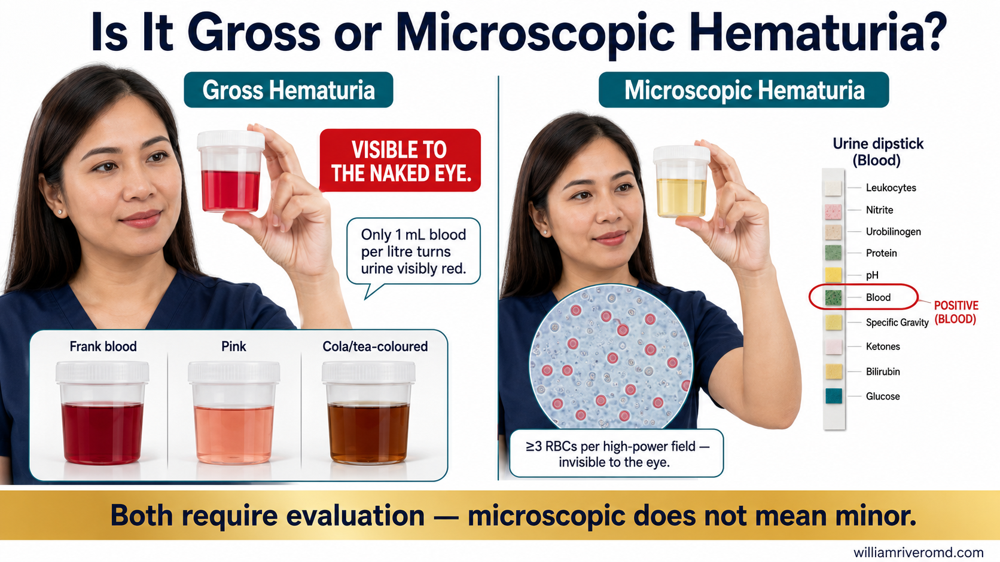
Things that mimic hematuria — and are not bloodMga bagay na kahawig ng hematuria — ngunit hindi dugoMga butang nagpakita nga hematuria — apan dili dugo Deng bagay a kahawig ning hematuria — ngarud ali daya
- Beetroot, red camote, blackberries: turns urine red or pink — no blood on dipstickBeetroot, pulang camote, blackberries: nagpapula o nagpapink ng ihi — walang dugo sa dipstickBeetroot, pulang camote, blackberries: nagpapula o nagpapink sa ihi — walay dugo sa dipstick Beetroot, pulang camote, blackberries: nagpapula o nagpapink ning ihi — alang daya king dipstick
- Rifampicin (TB medication): orange-red urine — expected side effect, not bloodRifampicin (gamot sa TB): orange-pulang ihi — inaasahang epekto, hindi dugoRifampicin (tambal sa TB): orange-pulang ihi — ginapaabut nga epekto, dili dugo Rifampicin (gamut king TB): orange-pulang ihi — inaasahang epekto, ali daya
- Myoglobinuria (after severe muscle injury): dipstick tests positive for blood but urinalysis shows no RBCsMyoglobinuria (pagkatapos ng matinding pinsala sa kalamnan): positibo ang dipstick para sa dugo ngunit walang RBC sa urinalysisMyoglobinuria (pagkahuman sa grabe nga samad sa kalamnan): positibo ang dipstick sa dugo apan walay RBC sa urinalysis Myoglobinuria (kapabanuan ning matinding pinsala king kalamnan): positibo ing dipstick para king daya ngarud alang RBC king urinalysis
- Menstrual contamination: always collect mid-stream urine; repeat after menstruation endsKontaminasyon ng regla: laging kumuha ng mid-stream urine; ulitin pagkatapos ng menstruasyonKontaminasyon sa regla: kanunay kuhaon ang mid-stream urine; balikbalikon pagkahuman sa menstruasyon Kontaminasyon ning regla: pirming kumuha ning mid-stream urine; ulitin kapabanuan ning menstruasyon
- Rule of thumb: dipstick positive for blood + no RBCs on microscopy = not hematuriaPanuntunan: positibong dipstick para sa dugo + walang RBC sa microscopy = hindi hematuriaLagda: positibong dipstick sa dugo + walay RBC sa microscopy = dili hematuria Panuntunan: positibong dipstick para king daya + alang RBC king microscopy = ali hematuria
The Three-Tube Test — Where is the Blood Coming From?Ang Three-Tube Test — Saan Nanggagaling ang Dugo?Ang Three-Tube Test — Diin Gikan ang Dugo? Ing Three-Tube Test — Saan Nanggagaling ing Daya?
Before imaging and cystoscopy, a simple bedside manoeuvre can narrow the source of bleeding to the urethra/prostate, the bladder, or the upper tract (kidneys/ureters). This is called the three-glass (three-tube) test — ask the patient to urinate continuously into three sequential containers.Bago ang imaging at cystoscopy, ang isang simpleng pagsusuri sa tabi ng higaan ay makapapaliitin ng pinagmulan ng pagdurugo sa urethra/prostate, pantog, o upper tract (mga bato/ureter). Ito ay tinatawag na three-glass (three-tube) test — hilingin sa pasyente na umihi nang tuloy-tuloy sa tatlong magkakasunod na lalagyan.Sa wala pa ang imaging ug cystoscopy, ang usa ka simpleng pagsusi sa higdaan makakitid sa gigikanan sa pagdugo sa urethra/prostate, pantog, o upper tract (mga bato/ureter). Gitawag kini nga three-glass (three-tube) test — pangayoon ang pasyente nga mag-ihi nga walay undang sa tulo ka magkabig nga sudlanan. Bago ing imaging at cystoscopy, ing metung a simpleng pagsusuri king tabi ning higaan ya makapapaliitin ning pinagmulan ning pagdurugo king urethra/prostate, pantog, o upper tract (deng batu/ureter). Ini ya tinatawag a three-glass (three-tube) test — hilingin king pasyente a umihi nang tuloy-tuloy king tatlong magkakasunod a lalagyan.
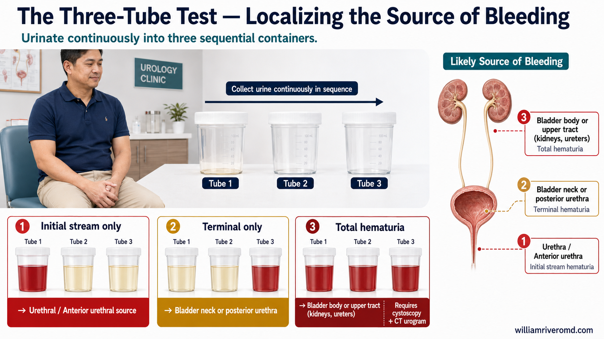
① Tube 1 only — red (initial stream): Blood clears in tubes 2 and 3. Bleeding is from the urethra or anterior urethra — urethritis, urethral carcinoma, urethral polyp.Nalilinaw ang dugo sa tubo 2 at 3. Ang pagdurugo ay mula sa urethra o anterior urethra — urethritis, urethral carcinoma, urethral polyp.Molinaw ang dugo sa tubo 2 ug 3. Ang pagdugo gikan sa urethra o anterior urethra — urethritis, urethral carcinoma, urethral polyp.Nalilinaw ing daya king tubo 2 at 3. Ing pagdurugo ya mula king urethra o anterior urethra — urethritis, urethral carcinoma, urethral polyp.
② Tube 3 only — red (terminal): Terminal hematuria — blood appears only at the end of voiding. Source is the bladder neck or posterior urethra — bladder tumour, posterior urethral lesion, BPH.Terminal hematuria — ang dugo ay lumalabas lamang sa katapusan ng pag-ihi. Ang pinagmulan ay ang leeg ng pantog o posterior urethra — tumor sa pantog, posterior urethral lesion, BPH.Terminal hematuria — ang dugo mogawas lamang sa katapusan sa pag-ihi. Ang gigikanan mao ang liog sa pantog o posterior urethra — tumor sa pantog, posterior urethral lesion, BPH.Terminal hematuria — ing daya ya lumalabas lamang king katapusan ning pag-ihi. Ing pinagmulan ya ing leeg ning pantog o posterior urethra — tumor king pantog, posterior urethral lesion, BPH.
③ All 3 tubes equally red (total): Total hematuria — blood throughout. Source is the bladder body or upper tract (kidneys, ureters). Requires cystoscopy + upper tract imaging.Total hematuria — dugo sa lahat ng bahagi. Ang pinagmulan ay ang katawan ng pantog o upper tract (mga bato, ureter). Nangangailangan ng cystoscopy + upper tract imaging.Total hematuria — dugo sa tibuok. Ang gigikanan mao ang lawas sa pantog o upper tract (mga bato, ureter). Kinahanglan og cystoscopy + upper tract imaging.Total hematuria — daya king amin ning bahagi. Ing pinagmulan ya ing bangkî ning pantog o upper tract (deng batu, ureter). Nangangailangan ning cystoscopy + upper tract imaging.
The three-tube test in the age of cystoscopyAng three-tube test sa panahon ng cystoscopyAng three-tube test sa panahon sa cystoscopy Ing three-tube test king panahon ning cystoscopy
Modern flexible cystoscopy has largely replaced the three-tube test in clinical practice, but the concept remains invaluable for helping patients describe their symptoms accurately and for guiding initial triage in settings where cystoscopy is not immediately available. When a patient reports blood "only at the start" vs. "throughout," they are giving you the same information.Ang modernong flexible cystoscopy ay higit na pinalitan na ang three-tube test sa klinikal na kasanayan, ngunit ang konsepto ay nananatiling napakahalaga sa pagtulong sa mga pasyente na ilarawan nang tumpak ang kanilang mga sintomas at sa paggabay ng paunang triage sa mga lugar kung saan hindi agad available ang cystoscopy. Kapag nag-ulat ang pasyente ng dugo "sa simula lamang" kumpara sa "sa buong pag-ihi," binibigay nila ang parehong impormasyon.Ang moderno nga flexible cystoscopy halos gipulihan na ang three-tube test sa klinikal nga praktis, apan ang konsepto nagpabilin nga bililhon sa pagtabang sa mga pasyente sa pagsaysay sa ilang mga sintomas ug sa paggiya sa unang triage sa mga lugar diin dili dayon makuha ang cystoscopy. Kon mag-report ang pasyente og dugo "sa sinugdanan lamang" kumpara sa "sa tibuok pag-ihi," naghatag sila sa parehas nga impormasyon. Ing modernong flexible cystoscopy ya higit a pinalitan a ing three-tube test king klinikal a kasanayan, ngarud ing konsepto ya nananatiling napakahalaga king pagtulong king deng pasyente a ilarawan nang tumpak ing kanilang deng sintomas at king paggabay ning paunang triage king deng lugar nung saan ali agad available ing cystoscopy. Nung nag-ulat ing pasyente ning daya "king simula lamang" kumpara king "king buong pag-ihi," binibigay nila ing parehong impormasyon.
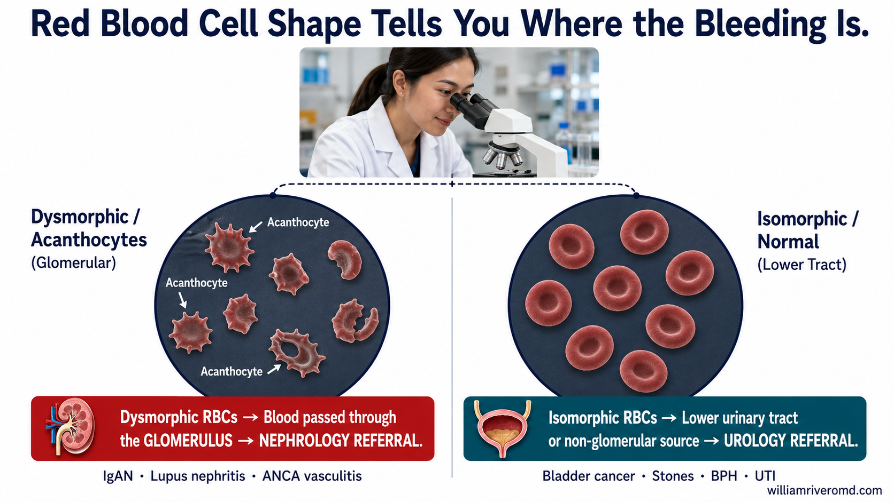
RBC Morphology — The Glomerular ClueRBC Morphology — Ang Pahiwatig sa GlomerularRBC Morphology — Ang Timailhan sa Glomerular RBC Morphology — Ing Pahiwatig king Glomerular
When urine microscopy is performed on a properly spun specimen by an experienced observer, the shape of the red blood cells matters as much as the count.Kapag ginagawa ang urine microscopy sa isang wastong pinaikot na sample ng isang may karanasang tagamasid, ang hugis ng mga pulang selula ng dugo ay kasinghalaga ng bilang.Kon buhaton ang urine microscopy sa usa ka hustong gipaikot nga sample sa usa ka may kasinatian nga tagaobserba, ang porma sa mga pulang selula sa dugo kasingkahalagang sa bilang. Nung ginagawa ing urine microscopy king metung a wastong pinaikot a sample ning metung a atin karanasang tagamasid, ing hugis ning deng pulang selula ning daya ya kasinghalaga ning bilang.
Dysmorphic RBCs / AcanthocytesDysmorphic RBCs / AcanthocytesDysmorphic RBCs / Acanthocytes Dysmorphic RBCs / Acanthocytes
Irregular, distorted, or "Mickey Mouse" ear–shaped cells (acanthocytes). These are RBCs that have been deformed by passage through the glomerular basement membrane and the renal tubules. ≥5% acanthocytes or RBC casts = glomerular hematuria → nephrology referral, not urology. Causes: IgA nephropathy, lupus nephritis, ANCA vasculitis, thin basement membrane disease.Irregular, distorted, o "Mickey Mouse" ear-hugis na mga selula (acanthocytes). Ito ang mga RBC na nabalot ng pagdaan sa glomerular basement membrane at renal tubules. ≥5% acanthocytes o RBC casts = glomerular hematuria → nephrology referral, hindi urology. Mga sanhi: IgA nephropathy, lupus nephritis, ANCA vasculitis, thin basement membrane disease.Irregular, distorted, o "Mickey Mouse" ear-porma nga mga selula (acanthocytes). Kini ang mga RBC nga nabag-o sa pagagi sa glomerular basement membrane ug renal tubules. ≥5% acanthocytes o RBC casts = glomerular hematuria → nephrology referral, dili urology. Mga hinungdan: IgA nephropathy, lupus nephritis, ANCA vasculitis, thin basement membrane disease. Irregular, distorted, o "Mickey Mouse" ear-hugis a deng selula (acanthocytes). Ini ing deng RBC a nabalot ning pagdaan king glomerular basement membrane at renal tubules. ≥5% acanthocytes o RBC casts = glomerular hematuria → nephrology referral, ali urology. Deng sanhi: IgA nephropathy, lupus nephritis, ANCA vasculitis, thin basement membrane disease.
Isomorphic (uniform) RBCsIsomorphic (pare-pareho) na RBCsIsomorphic (managsama) nga RBCs Isomorphic (pare-pareho) a RBCs
Normal biconcave disc shape — these cells have not passed through the glomerulus. Isomorphic RBCs = lower urinary tract or non-glomerular upper tract bleeding. Causes: bladder cancer, transitional cell carcinoma of the ureter, kidney stones, benign prostatic hyperplasia, urinary tract infection, arteriovenous malformation.Normal na biconcave disc shape — ang mga selulang ito ay hindi dumaan sa glomerulus. Isomorphic RBCs = pagdurugo sa lower urinary tract o non-glomerular upper tract. Mga sanhi: kanser sa pantog, transitional cell carcinoma ng ureter, bato sa bato, benign prostatic hyperplasia, urinary tract infection, arteriovenous malformation.Normal nga biconcave disc shape — kini nga mga selula wala moagi sa glomerulus. Isomorphic RBCs = pagdugo sa lower urinary tract o non-glomerular upper tract. Mga hinungdan: kanser sa pantog, transitional cell carcinoma sa ureter, bato sa bato, benign prostatic hyperplasia, urinary tract infection, arteriovenous malformation. Normal a biconcave disc shape — ing deng selulang ini ya ali dumaan king glomerulus. Isomorphic RBCs = pagdurugo king lower urinary tract o non-glomerular upper tract. Deng sanhi: kanser king pantog, transitional cell carcinoma ning ureter, batu king batu, benign prostatic hyperplasia, urinary tract infection, arteriovenous malformation.
Pattern Recognition — What Your History RevealsPagkilala sa Pattern — Ano ang Inihahayag ng Inyong KasaysayanPagila sa Pattern — Unsa ang Gipadayag sa Imong Kasaysayan Pagkilala king Pattern — Ano ing Inihahayag ning Inyu Kasaysayan
The timing, associated symptoms, age, and sex of the patient together form a pattern that narrows the differential dramatically before any test is ordered.Ang oras, mga kasamang sintomas, edad, at kasarian ng pasyente ay magkasamang bumubuo ng isang pattern na lubhang nagpapaliitin ng diyagnosis bago pa man mag-order ng anumang pagsusuri.Ang oras, mga kauban nga sintomas, edad, ug sekso sa pasyente magkasamang nagporma og pattern nga grabe nga nagkitid sa diyagnosis sa wala pa mag-order og bisan unsang pagsusi. Ing oras, deng kasamang sintomas, edad, at kasarian ning pasyente ya magkasamang bumubuo ning metung a pattern a lubhang nagpapaliitin ning diyagnosis bago pa man mag-order ning anumang pagsusuri.
| PatternPatternPattern Pattern | Key cluePangunahing pahiwatigPangunahing timailhan Pangunahing pahiwatig | Think ofIsaalang-alangHunahunaa Isaalang-alang |
|---|---|---|
| Painless gross hematuria, age >40, smokerWalang sakit na gross hematuria, edad >40, naninigarilyoWalay sakit nga gross hematuria, edad >40, nagsigarilyo Alang sakit a gross hematuria, edad >40, naninigarilyo | No UTI symptoms, no fever, no painWalang sintomas ng UTI, walang lagnat, walang sakitWalay sintomas sa UTI, walay hilanat, walay sakit Alang sintomas ning UTI, alang lagnat, alang sakit | Bladder cancer until proven otherwise — cystoscopy urgentlyKanser sa pantog hanggang sa mapatunayan ang kabaligtaran — cystoscopy agadKanser sa pantog hangtod mapatunayan ang kabaliktaran — cystoscopy dayon Kanser king pantog anggang king mapatunayan ing kabaligtaran — cystoscopy agad |
| Hematuria 1–3 days after a sore throat or upper respiratory infectionHematuria 1–3 araw pagkatapos ng lagnat sa lalamunan o upper respiratory infectionHematuria 1–3 ka adlaw pagkahuman sa sakit sa tutunlan o upper respiratory infection Hematuria 1–3 aldo kapabanuan ning lagnat king lalamunan o upper respiratory infection | Synpharyngitic — blood follows infection by 24–72 hSynpharyngitic — ang dugo sumusunod sa impeksyon sa loob ng 24–72 orasSynpharyngitic — ang dugo mosunod sa impeksyon sulod sa 24–72 ka oras Synpharyngitic — ing daya sumusunod king impeksyon king loob ning 24–72 oras | IgA nephropathy (IgAN) — nephrology referralIgA nephropathy (IgAN) — referral sa nephrologyIgA nephropathy (IgAN) — referral sa nephrology IgA nephropathy (IgAN) — referral king nephrology |
| Severe flank pain radiating to groin, hematuria, nauseaMatinding sakit sa tagiliran na pumupunta sa singit, hematuria, pagduwalGrabe nga sakit sa kilid nga mobalhin sa singit, hematuria, pagsuka-suka Matinding sakit king tagiliran a pumupunta king singit, hematuria, pagduwal | Colicky pain, restlessnessColicky na sakit, pagkabalisaColicky nga sakit, pagkabalisa Colicky a sakit, pagkabalisa | Urolithiasis (kidney stone) — CT KUBUrolithiasis (bato sa bato) — CT KUBUrolithiasis (bato sa bato) — CT KUB Urolithiasis (batu king batu) — CT KUB |
| Hematuria + dysuria + frequency + feverHematuria + masakit na pag-ihi + madalas na pag-ihi + lagnatHematuria + masakit nga pag-ihi + kanunay nga pag-ihi + hilanat Hematuria + masakit a pag-ihi + madalas a pag-ihi + lagnat | UTI symptoms, women more commonSintomas ng UTI, mas karaniwan sa kababaihanSintomas sa UTI, mas kasagaran sa mga babaye Sintomas ning UTI, mas karaniwan king kababaihan | Urinary tract infection — urine culture first; if recurrent, further workupUrinary tract infection — urine culture muna; kung paulit-ulit, karagdagang pagsusuriUrinary tract infection — urine culture una; kon nagbalikbalik, dugang pagsusi Urinary tract infection — urine culture muna; nung paulit-ulit, karagdagang pagsusuri |
| Hematuria + facial puffiness + hypertension, child or young adultHematuria + pamamaga ng mukha + hypertension, bata o kabataanHematuria + pamamaga sa nawong + hypertension, bata o batan-on Hematuria + pamamaga ning mukha + hypertension, bata o kabataan | 2–3 weeks after strep throat2–3 linggo pagkatapos ng strep throat2–3 ka semana pagkahuman sa strep throat 2–3 lutu kapabanuan ning strep throat | Post-infectious GN (PSGN) — ASO titre, complement levelsPost-infectious GN (PSGN) — ASO titre, antas ng complementPost-infectious GN (PSGN) — ASO titre, lebel sa complement Post-infectious GN (PSGN) — ASO titre, antas ning complement |
| Hematuria + proteinuria + hypertension + edemaHematuria + proteinuria + hypertension + pamamagaHematuria + proteinuria + hypertension + pamamaga Hematuria + proteinuria + hypertension + pamamaga | Nephritic syndromeNephritic syndromeNephritic syndrome Nephritic syndrome | Glomerulonephritis — nephrology; biopsy often neededGlomerulonephritis — nephrology; kadalasang kailangan ng biopsyGlomerulonephritis — nephrology; sagad kinahanglan og biopsy Glomerulonephritis — nephrology; kadalasang kailangan ning biopsy |
| Microscopic hematuria in young woman, family history of kidney diseaseMicroscopic hematuria sa batang babae, may kasaysayan ng sakit sa bato sa pamilyaMicroscopic hematuria sa batan-ong babaye, may kasaysayan sa pamilya nga sakit sa bato Microscopic hematuria king batang babae, atin kasaysayan ning sakit king batu king pamilya | Thin GBM on biopsyManipis na GBM sa biopsyManipis nga GBM sa biopsy Manipis a GBM king biopsy | Thin basement membrane disease / Alport syndromeThin basement membrane disease / Alport syndromeThin basement membrane disease / Alport syndrome Thin basement membrane disease / Alport syndrome |
| Hematuria after vigorous exercise, clears with restHematuria pagkatapos ng maigting na ehersisyo, nalilinaw sa pahingaHematuria pagkahuman sa lig-on nga ehersisyo, molinaw sa pahinga Hematuria kapabanuan ning maigting a ehersisyo, nalilinaw king pahinga | Marathon runners, military trainingMga manlalakbay sa marathon, pagsasanay sa militarMga nagdalagan sa marathon, pagsanay sa militar Deng manlalakbay king marathon, pagsasanay king militar | Exercise-induced hematuria — benign if clears within 72 h; confirm with repeat UAExercise-induced hematuria — benign kung nalilinaw sa loob ng 72 oras; kumpirmahin sa ulit na UAExercise-induced hematuria — benign kon molinaw sulod sa 72 ka oras; kumpirmahi sa balikbalik nga UA Exercise-induced hematuria — benign nung nalilinaw king loob ning 72 oras; kumpirmahin king ulit a UA |
| Hematuria + fever + flank pain + costovertebral tendernessHematuria + lagnat + sakit sa tagiliran + costovertebral tendernessHematuria + hilanat + sakit sa kilid + costovertebral tenderness Hematuria + lagnat + sakit king tagiliran + costovertebral tenderness | Upper UTIUpper UTIUpper UTI Upper UTI | Pyelonephritis — urine culture + IV antibiotics if severePyelonephritis — urine culture + IV antibiotics kung malubhaPyelonephritis — urine culture + IV antibiotics kon grabe Pyelonephritis — urine culture + IV antibiotics nung malubha |
| Painless gross hematuria, male, >50, prostate enlargementWalang sakit na gross hematuria, lalaki, >50, pinalaking prostateWalay sakit nga gross hematuria, lalaki, >50, pinalaki nga prostate Alang sakit a gross hematuria, lalaki, >50, pinalaking prostate | Terminal hematuriaTerminal hematuriaTerminal hematuria Terminal hematuria | BPH or bladder neck pathology — urology evaluationBPH o pathology ng leeg ng pantog — pagsusuri sa urologyBPH o pathology sa liog sa pantog — pagsusi sa urology BPH o pathology ning leeg ning pantog — pagsusuri king urology |
The Synpharyngitic Pattern — IgA Nephropathy's Calling CardAng Synpharyngitic Pattern — Ang Tanda ng IgA NephropathyAng Synpharyngitic Pattern — Ang Timailhan sa IgA Nephropathy Ing Synpharyngitic Pattern — Ing Tanda ning IgA Nephropathy
IgA nephropathy (Berger's disease) is the most common primary glomerulonephritis worldwide and a leading cause of kidney failure in young adults. It has a distinctive and recognizable presentation that patients and families can identify — if they know what to look for. The Philippines has a high prevalence due to genetic and environmental factors.Ang IgA nephropathy (Berger's disease) ay ang pinaka-karaniwang pangunahing glomerulonephritis sa buong mundo at isa sa mga nangungunang sanhi ng pagkabigo ng bato sa mga kabataan. Mayroon itong natatangi at nakikilalang presentasyon na maaaring matukoy ng mga pasyente at pamilya — kung alam nila ang dapat hanapin. Ang Pilipinas ay may mataas na prevalence dahil sa genetic at environmental na mga salik.Ang IgA nephropathy (Berger's disease) mao ang labing kasagarang pangunahing glomerulonephritis sa tibuok kalibutan ug usa sa mga nanguna nga hinungdan sa pagkabigo sa bato sa mga batan-on. Adunay kini talagsaon ug mailhan nga presentasyon nga maalaman sa mga pasyente ug pamilya — kon hibal-an nila ang pangitaon. Ang Pilipinas adunay taas nga prevalence tungod sa genetic ug environmental nga mga salik. Ing IgA nephropathy (Berger's disease) ya ing pinaka-karaniwang pangunahing glomerulonephritis king buong mundo at metung king deng nangungunang sanhi ning pagkabigo ning batu king deng kabataan. Mayroon itong natatangi at nakikilalang presentasyon a maaaring matukoy ning deng pasyente at pamilya — nung alam nila ing dapat hanapin. Ing Pilipinas ya atin matas a prevalence dahil king genetic at environmental a deng salik.
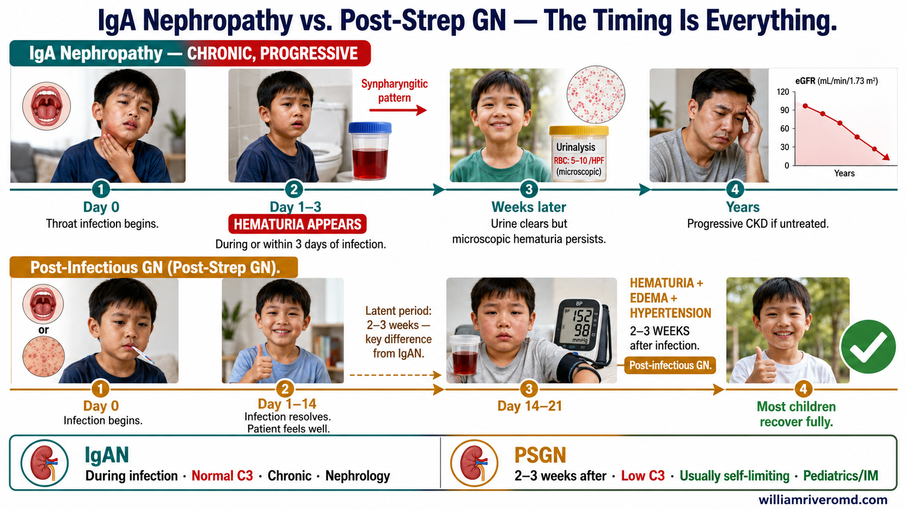
The Classic PresentationAng Klasikong PagpapakitaAng Klasikong Presentasyon Ing Klasikong Pagpapakita
Day 0–1: Upper respiratory infection beginsAraw 0–1: Nagsisimula ang upper respiratory infectionAdlaw 0–1: Nagsugod ang upper respiratory infection Aldo 0–1: Nagsisimula ing upper respiratory infection
Sore throat, tonsillitis, pharyngitis — often viral, sometimes bacterial strep. Mucosal IgA antibodies are produced in response to the infection.Sakit na lalamunan, tonsillitis, pharyngitis — kadalasang viral, minsan bacterial strep. Ang mucosal IgA antibodies ay nalilikha bilang tugon sa impeksyon.Sakit sa tutunlan, tonsillitis, pharyngitis — sagad viral, usahay bacterial strep. Ang mucosal IgA antibodies ginahimo isip tubag sa impeksyon. Sakit a lalamunan, tonsillitis, pharyngitis — kadalasang viral, misan bacterial strep. Ing mucosal IgA antibodies ya nalilikha bilang tugon king impeksyon.
Day 1–3: Gross hematuria appears (synpharyngitic)Araw 1–3: Lumilitaw ang gross hematuria (synpharyngitic)Adlaw 1–3: Mogawas ang gross hematuria (synpharyngitic) Aldo 1–3: Lumilitaw ing gross hematuria (synpharyngitic)
Unlike post-infectious GN (which follows strep by 2–3 weeks), IgAN hematuria occurs during or within 3 days of the infection. This near-simultaneous timing is the key diagnostic clue. The urine turns cola-colored or frankly red.Hindi katulad ng post-infectious GN (na sumusunod sa strep nang 2–3 linggo), ang IgAN hematuria ay nangyayari sa panahon ng o sa loob ng 3 araw mula sa impeksyon. Ang halos sabay na timing na ito ang pangunahing pahiwatig sa diyagnosis. Nagiging cola-kulay o hayagang pula ang ihi.Dili sama sa post-infectious GN (nga mosunod sa strep sa 2–3 ka semana), ang IgAN hematuria mahitabo sa panahon sa o sulod sa 3 ka adlaw gikan sa impeksyon. Kini nga halos magkasamang timing ang pangunahing timailhan sa diyagnosis. Ang ihi mohimong cola-kolor o hayag nga pula. Ali katulad ning post-infectious GN (a sumusunod king strep nang 2–3 lutu), ing IgAN hematuria ya nangyayari king panahon ning o king loob ning 3 aldo mula king impeksyon. Ing halos sabay a timing a ini ing pangunahing pahiwatig king diyagnosis. Nagiging cola-kulay o hayagang pula ing ihi.
Between episodes: Microscopic hematuria persistsSa pagitan ng mga episode: Nagpapatuloy ang microscopic hematuriaTali sa mga episode: Nagpadayon ang microscopic hematuria King pagitan ning deng episode: Nagpapatuloy ing microscopic hematuria
Even when the urine clears visibly, urinalysis typically shows persistent microscopic hematuria and often mild proteinuria (<1 g/day in early disease). This is what gets missed — patients feel well, and hematuria between episodes goes undetected without routine urinalysis.Kahit na luminis na ang ihi sa mata, ang urinalysis ay karaniwang nagpapakita ng patuloy na microscopic hematuria at kadalasang banayad na proteinuria (<1 g/araw sa maagang sakit). Ito ang hindi napapansin — maayos ang pakiramdam ng mga pasyente, at ang hematuria sa pagitan ng mga episode ay hindi natutukoy nang walang routine urinalysis.Bisan kon molinaw na ang ihi sa mata, ang urinalysis kasagaran nagpakita og padayon nga microscopic hematuria ug sagad nga hinay nga proteinuria (<1 g/adlaw sa sayo nga sakit). Kini ang dili napansin — maayo ang gibati sa mga pasyente, ug ang hematuria tali sa mga episode dili mamatikdan nga walay routine urinalysis. Kahit a luminis a ing ihi king mata, ing urinalysis ya karaniwang nagpapakita ning patuloy a microscopic hematuria at kadalasang banayad a proteinuria (<1 g/aldo king maagang sakit). Ini ing ali napapansin — maayos ing pakiramdam ning deng pasyente, at ing hematuria king pagitan ning deng episode ya ali natutukoy nang alang routine urinalysis.
Years later: Progressive CKD if untreatedMga taon na ang lumipas: Progresibong CKD kung hindi ginagamotMga tuig na ang milabay: Progresibong CKD kon wala gitambal Deng banua a ing lumipas: Progresibong CKD nung ali ginagamot
20–40% of IgAN patients progress to end-stage kidney disease over 20 years. KDIGO 2021 guidelines now recommend SGLT2 inhibitors (dapagliflozin, empagliflozin) and optimized supportive care. Sparsentan and targeted-release budesonide (Nefecon) are newer options. Early diagnosis and treatment change outcomes.Ang 20–40% ng mga pasyenteng may IgAN ay napupunta sa end-stage kidney disease sa loob ng 20 taon. Ang KDIGO 2021 guidelines ay nagrerekomenda na ngayon ng SGLT2 inhibitors (dapagliflozin, empagliflozin) at optimized supportive care. Ang Sparsentan at targeted-release budesonide (Nefecon) ay mas bagong mga pagpipilian. Ang maagang diyagnosis at paggamot ay nagbabago ng mga resulta.Ang 20–40% sa mga pasyente nga adunay IgAN moabut sa end-stage kidney disease sulod sa 20 ka tuig. Ang KDIGO 2021 guidelines karon nagrekomenda sa SGLT2 inhibitors (dapagliflozin, empagliflozin) ug optimized supportive care. Ang Sparsentan ug targeted-release budesonide (Nefecon) bag-ong mga kapilian. Ang sayo nga diyagnosis ug pagtambal nagbag-o sa mga resulta. Ing 20–40% ning deng pasyenteng atin IgAN ya napupunta king end-stage kidney disease king loob ning 20 banua. Ing KDIGO 2021 guidelines ya nagrerekomenda a ngayon ning SGLT2 inhibitors (dapagliflozin, empagliflozin) at optimized supportive care. Ing Sparsentan at targeted-release budesonide (Nefecon) ya mas bagong deng pagpipilian. Ing maagang diyagnosis at paggamut ya nagbabago ning deng resulta.
The IgAN checklist — when to suspect itAng checklist para sa IgAN — kailan ito dapat hinalaingAng checklist alang sa IgAN — kanus-a kini angay suspetsahon Ing checklist para king IgAN — kailan ini dapat hinalaing
- Young adult (age 15–40) with recurrent episodes of gross hematuriaBatang adulto (edad 15–40) na may paulit-ulit na episode ng gross hematuriaBatan-ong hamtong (edad 15–40) nga adunay nagbalikbalik nga episode sa gross hematuria Batang adulto (edad 15–40) a atin paulit-ulit a episode ning gross hematuria
- Each episode occurs during or within 1–3 days of a respiratory infection or gastroenteritisBawat episode ay nangyayari sa panahon ng o sa loob ng 1–3 araw ng respiratory infection o gastroenteritisAng matag episode mahitabo sa panahon sa o sulod sa 1–3 ka adlaw sa respiratory infection o gastroenteritis Bawat episode ya nangyayari king panahon ning o king loob ning 1–3 aldo ning respiratory infection o gastroenteritis
- Persistent microscopic hematuria between episodes on routine UAPatuloy na microscopic hematuria sa pagitan ng mga episode sa routine UAPadayon nga microscopic hematuria tali sa mga episode sa routine UA Patuloy a microscopic hematuria king pagitan ning deng episode king routine UA
- Mild proteinuria (spot urine PCR 100–500 mg/mmol)Banayad na proteinuria (spot urine PCR 100–500 mg/mmol)Hinay nga proteinuria (spot urine PCR 100–500 mg/mmol) Banayad a proteinuria (spot urine PCR 100–500 mg/mmol)
- Normal complement levels (C3, C4) — distinguishes from PSGN where C3 is lowNormal na antas ng complement (C3, C4) — nagpapalain mula sa PSGN kung saan mababa ang C3Normal nga lebel sa complement (C3, C4) — nagpalain gikan sa PSGN diin ubos ang C3 Normal a antas ning complement (C3, C4) — nagpapalain mula king PSGN nung saan mababa ing C3
- Family history of kidney disease or deafness (consider Alport syndrome in the differential)Kasaysayan ng sakit sa bato o pagkabingi sa pamilya (isaalang-alang ang Alport syndrome sa differential)Kasaysayan sa pamilya nga sakit sa bato o pagkabungol (hunahunaa ang Alport syndrome sa differential) Kasaysayan ning sakit king batu o pagkabingi king pamilya (isaalang-alang ing Alport syndrome king differential)
- Diagnosis requires kidney biopsy showing mesangial IgA deposits on immunofluorescenceAng diyagnosis ay nangangailangan ng kidney biopsy na nagpapakita ng mesangial IgA deposits sa immunofluorescenceAng diyagnosis nagkinahanglan og kidney biopsy nga nagpakita sa mesangial IgA deposits sa immunofluorescence Ing diyagnosis ya nangangailangan ning kidney biopsy a nagpapakita ning mesangial IgA deposits king immunofluorescence
Don't confuse IgAN with post-strep GN — the timing is differentHuwag malito ang IgAN sa post-strep GN — ang timing ay naiibaAyaw kalibog ang IgAN sa post-strep GN — lain ang timing Eka malito ing IgAN king post-strep GN — ing timing ya naiiba
Post-infectious (post-strep) GN also follows a throat or skin infection — but the latent period is 2–3 weeks after the infection resolves. It presents with low complement (C3), cola urine, hypertension, and edema (nephritic syndrome). It is self-limiting in children but can be serious in adults. IgAN, by contrast, occurs during the infection, complements are normal, and it is a chronic, progressive disease.Post-infectious (post-strep) GN ay sumusunod din sa impeksyon sa lalamunan o balat — ngunit ang latent period ay 2–3 linggo pagkatapos na gumaling ang impeksyon. Nagpapakita ito ng mababang complement (C3), cola na ihi, hypertension, at pamamaga (nephritic syndrome). Ito ay self-limiting sa mga bata ngunit maaaring malubha sa mga adulto. Ang IgAN, sa kabaligtaran, ay nangyayari sa panahon ng impeksyon, normal ang mga complement, at ito ay isang talamak at progresibong sakit.Post-infectious (post-strep) GN mosunod usab sa impeksyon sa tutunlan o panit — apan ang latent period mao ang 2–3 ka semana pagkahuman nga moubos ang impeksyon. Nagpakita kini og ubos nga complement (C3), cola nga ihi, hypertension, ug pamamaga (nephritic syndrome). Self-limiting kini sa mga bata apan mahimong grabe sa mga hamtong. Ang IgAN, sa kasukwahi, mahitabo sa panahon sa impeksyon, normal ang mga complement, ug kini usa ka talamak ug progresibong sakit. Post-infectious (post-strep) GN ya sumusunod din king impeksyon king lalamunan o balat — ngarud ing latent period ya 2–3 lutu kapabanuan a gumaling ing impeksyon. Nagpapakita ini ning mababang complement (C3), cola a ihi, hypertension, at pamamaga (nephritic syndrome). Ini ya self-limiting king deng bata ngarud maaaring malubha king deng adulto. Ing IgAN, king kabaligtaran, ya nangyayari king panahon ning impeksyon, normal ing deng complement, at ini ya metung a talamak at progresibong sakit.
When a Urine Culture Is Enough — and When It Isn'tKailan Sapat ang Urine Culture — at Kailan HindiKanus-a Igo ang Urine Culture — ug Kanus-a Dili Kailan Sapat ing Urine Culture — at Kailan Ali
The most important triage decision in hematuria is whether this is a simple infection requiring only a urine culture, or whether cystoscopy, imaging, and nephrology referral are needed. Getting this wrong in either direction has real consequences: over-investigating simple UTI wastes resources and causes anxiety; under-investigating bladder cancer causes fatal delays.Ang pinakamahalagang desisyon sa triage sa hematuria ay kung ito ba ay isang simpleng impeksyon na nangangailangan lamang ng urine culture, o kung kailangan na ang cystoscopy, imaging, at nephrology referral. Ang pagkakamali sa alinmang direksyon ay may tunay na kahihinatnan: ang labis na pagsusuri sa simpleng UTI ay nag-aaksaya ng mapagkukunan at nagdudulot ng pagkabalisa; ang kulang na pagsusuri sa kanser sa pantog ay nagdudulot ng nakamamatay na pagkaantala.Ang labing importante nga desisyon sa triage sa hematuria mao kon kini usa ka simpleng impeksyon nga nagkinahanglan lamang og urine culture, o kon kinahanglan na ang cystoscopy, imaging, ug nephrology referral. Ang pagkasayop sa bisan unsang direksyon adunay tinuod nga kahihinatnan: ang sobrang pagsusi sa simpleng UTI nagasayang og mga kapanguhaan ug nagdala og kabalaka; ang kulang nga pagsusi sa kanser sa pantog nagdala og nakamamatay nga pagkahuyang. Ing pinakamahalagang desisyon king triage king hematuria ya nung ini ba ya metung a simpleng impeksyon a nangangailangan lamang ning urine culture, o nung kailangan a ing cystoscopy, imaging, at nephrology referral. Ing pagkakamali king alinmang direksyon ya atin tunay a kahihinatnan: ing labis a pagsusuri king simpleng UTI ya nag-aaksaya ning mapagkukunan at nagdudulot ning pagkabalisa; ing kulang a pagsusuri king kanser king pantog ya nagdudulot ning nakamamatay a pagkaantala.
Risk Factors That Always Demand Full WorkupMga Risk Factor na Laging Nangangailangan ng Kumpletong PagsusuriMga Risk Factor nga Kanunay Nagkinahanglan og Tibuok nga Pagsusi Deng Risk Factor a Pirming Nangangailangan ning Kumpletong Pagsusuri
High-risk features — do not manage conservativelyMataas na panganib na mga katangian — huwag pamahalaan nang konserbatiboTaas nga peligro nga mga katangian — ayaw pamahalaa nga konserbatibo Matas a panganib a deng katangian — eka pamahalaan nang konserbatibo
- Smoking history (current or past) — the #1 risk factor for bladder cancerKasaysayan ng paninigarilyo (kasalukuyan o nakaraan) — ang #1 risk factor para sa kanser sa pantogKasaysayan sa pagsigarilyo (karon o nakaagi) — ang #1 risk factor alang sa kanser sa pantog Kasaysayan ning paninigarilyo (kasalukuyan o nakaraan) — ing #1 risk factor para king kanser king pantog
- Age ≥35 with any degree of hematuria (gross or microscopic, even single episode)Edad ≥35 na may anumang antas ng hematuria (gross o microscopic, kahit isang episode)Edad ≥35 nga adunay bisan unsang degree sa hematuria (gross o microscopic, bisan usa ka episode) Edad ≥35 a atin anumang antas ning hematuria (gross o microscopic, kahit metung a episode)
- Male sex with gross hematuria at any ageKasarian na lalaki na may gross hematuria sa anumang edadLalaki nga adunay gross hematuria sa bisan unsang edad Kasarian a lalaki a atin gross hematuria king anumang edad
- Occupational exposure: dye industry, rubber, leather, paint, petroleum workers (aromatic amine exposure)Pagkakalantad sa trabaho: industriya ng tina, goma, katad, pintura, mga manggagawa sa petrolyo (pagkakalantad sa aromatic amine)Pagkaladlad sa trabaho: industriya sa tinaga, goma, panit, pintura, mga mamumuo sa petrolyo (pagkaladlad sa aromatic amine) Pagkakalantad king obran: industriya ning tina, goma, katad, pintura, deng manggagawa king petrolyo (pagkakalantad king aromatic amine)
- Prior pelvic radiation therapyNakaraang radiation therapy sa pelvisNauna nga radiation therapy sa pelvis Nakaraang radiation therapy king pelvis
- Cyclophosphamide or ifosfamide chemotherapy historyKasaysayan ng chemotherapy gamit ang cyclophosphamide o ifosfamideKasaysayan sa chemotherapy gamit ang cyclophosphamide o ifosfamide Kasaysayan ning chemotherapy gamit ing cyclophosphamide o ifosfamide
- Chronic phenacetin or analgesic use (analgesic nephropathy)Talamak na paggamit ng phenacetin o analgesic (analgesic nephropathy)Talamak nga paggamit sa phenacetin o analgesic (analgesic nephropathy) Talamak a paggamit ning phenacetin o analgesic (analgesic nephropathy)
- Recurrent gross hematuria at any age — even if previous workup was negativePaulit-ulit na gross hematuria sa anumang edad — kahit negatibo ang nakaraang workupNagbalikbalik nga gross hematuria sa bisan unsang edad — bisan negatibo ang nauna nga workup Paulit-ulit a gross hematuria king anumang edad — kahit negatibo ing nakaraang workup
- Gross hematuria with blood clots — always high-riskGross hematuria na may mga clot ng dugo — laging mataas ang panganibGross hematuria nga adunay mga clot sa dugo — kanunay taas ang peligro Gross hematuria a atin deng clot ning daya — pirming matas ing panganib
- Unexplained weight loss + hematuriaHindi maipaliwanag na pagbaba ng timbang + hematuriaDili mapasabut nga pagkawala sa timbang + hematuria Ali maipaliwanag a pagbaba ning timbang + hematuria
The "one-time" episode — why it still mattersAng "isang beses lamang" na episode — bakit mahalaga pa rin itoAng "usa lang ka beses" nga episode — nganong importante pa gihapon kini Ing "metung a beses lamang" a episode — bakit importante pa rin ini
A single episode of gross hematuria, even if it completely resolves and the patient feels well, has a significant probability of underlying bladder cancer — especially in adults over 40. Guidelines from the AUA and EAU both recommend cystoscopy and upper tract imaging after even one episode of unexplained gross hematuria in an adult. "It only happened once and it went away" is the most common story bladder cancer patients tell at diagnosis.Ang isang episode ng gross hematuria, kahit na ganap itong gumaling at maayos ang pakiramdam ng pasyente, ay may malaking posibilidad ng pinagbabatayan na kanser sa pantog — lalo na sa mga adulto na mahigit 40. Ang mga alituntunin mula sa AUA at EAU ay parehong nagrerekomenda ng cystoscopy at upper tract imaging pagkatapos kahit isang episode ng hindi maipaliwanag na gross hematuria sa isang adulto. "Isang beses lamang ito nangyari at nawala" ang pinakakaraniwang kwento ng mga pasyenteng may kanser sa pantog sa oras ng diyagnosis.Ang usa ka episode sa gross hematuria, bisan kon hingpit kining moubos ug maayo ang gibati sa pasyente, adunay dakong posibilidad sa nagpahiping kanser sa pantog — ilabi na sa mga hamtong nga labaw sa 40. Ang mga alituntunin gikan sa AUA ug EAU nagrekomendar og cystoscopy ug upper tract imaging pagkahuman bisan sa usa ka episode sa dili mapasabut nga gross hematuria sa usa ka hamtong. "Usa lang ka beses kini nahitabo ug nawala" ang labing kasagarang sugilanon sa mga pasyente nga adunay kanser sa pantog sa oras sa diyagnosis. Ing metung a episode ning gross hematuria, kahit a ganap itong gumaling at maayos ing pakiramdam ning pasyente, ya atin malaking posibilidad ning pinagbabatayan a kanser king pantog — lalo a king deng adulto a mahigit 40. Ing deng alituntunin mula king AUA at EAU ya parehong nagrerekomenda ning cystoscopy at upper tract imaging kapabanuan kahit metung a episode ning ali maipaliwanag a gross hematuria king metung a adulto. "Metung a beses lamang ini nangyari at nawala" ing pinakakaraniwang kwento ning deng pasyenteng atin kanser king pantog king oras ning diyagnosis.
The Major Causes of Hematuria at a GlanceAng Mga Pangunahing Sanhi ng Hematuria sa Isang TinginAng Mga Pangunahing Hinungdan sa Hematuria sa Usa ka Sulyap Ing Deng Pangunahing Sanhi ning Hematuria king Metung a Tingin
Urological (Non-Glomerular)Urolohikal (Hindi Glomerular)Urolohikal (Dili Glomerular) Urolohikal (Ali Glomerular)
- Urinary tract infection (most common overall)Urinary tract infection (pinaka-karaniwan sa lahat)Urinary tract infection (labing kasagaran sa tanan) Urinary tract infection (pinaka-karaniwan king amin)
- Urolithiasis (kidney stones)Urolithiasis (bato sa bato)Urolithiasis (bato sa bato) Urolithiasis (batu king batu)
- Bladder cancer (transitional cell carcinoma)Kanser sa pantog (transitional cell carcinoma)Kanser sa pantog (transitional cell carcinoma) Kanser king pantog (transitional cell carcinoma)
- Renal cell carcinomaRenal cell carcinomaRenal cell carcinoma Renal cell carcinoma
- Urothelial cancer of ureter or renal pelvisUrothelial cancer ng ureter o renal pelvisUrothelial cancer sa ureter o renal pelvis Urothelial cancer ning ureter o renal pelvis
- Benign prostatic hyperplasia (BPH)Benign prostatic hyperplasia (BPH)Benign prostatic hyperplasia (BPH) Benign prostatic hyperplasia (BPH)
- Prostate cancerKanser sa prostateKanser sa prostate Kanser king prostate
- Urethral stricture or caruncleUrethral stricture o caruncleUrethral stricture o caruncle Urethral stricture o caruncle
- PyelonephritisPyelonephritisPyelonephritis Pyelonephritis
- Renal cysts (simple; polycystic)Renal cysts (simple; polycystic)Renal cysts (simple; polycystic) Renal cysts (simple; polycystic)
- Renal arteriovenous malformationRenal arteriovenous malformationRenal arteriovenous malformation Renal arteriovenous malformation
- Nutcracker syndromeNutcracker syndromeNutcracker syndrome Nutcracker syndrome
- TraumaTraumaTrauma Trauma
- Exercise-inducedDulot ng ehersisyoGikan sa ehersisyo Dulot ning ehersisyo
Glomerular (Nephrology)Glomerular (Nefrolohiya)Glomerular (Nefrolohiya) Glomerular (Nefrolohiya)
- IgA nephropathy (Berger's disease)IgA nephropathy (sakit ni Berger)IgA nephropathy (sakit ni Berger) IgA nephropathy (sakit ni Berger)
- Post-infectious GN (PSGN)Post-infectious GN (PSGN)Post-infectious GN (PSGN) Post-infectious GN (PSGN)
- Lupus nephritis (class III/IV)Lupus nephritis (klase III/IV)Lupus nephritis (klase III/IV) Lupus nephritis (klase III/IV)
- ANCA-associated vasculitis (GPA, MPA)ANCA-associated vasculitis (GPA, MPA)ANCA-associated vasculitis (GPA, MPA) ANCA-associated vasculitis (GPA, MPA)
- Anti-GBM disease (Goodpasture)Anti-GBM disease (Goodpasture)Anti-GBM disease (Goodpasture) Anti-GBM disease (Goodpasture)
- Thin basement membrane diseaseThin basement membrane diseaseThin basement membrane disease Thin basement membrane disease
- Alport syndrome (hereditary nephritis)Alport syndrome (hereditary nephritis)Alport syndrome (hereditary nephritis) Alport syndrome (hereditary nephritis)
- Membranoproliferative GNMembranoproliferative GNMembranoproliferative GN Membranoproliferative GN
- Focal segmental glomerulosclerosis (FSGS)Focal segmental glomerulosclerosis (FSGS)Focal segmental glomerulosclerosis (FSGS) Focal segmental glomerulosclerosis (FSGS)
- Henoch-Schönlein purpura nephritisHenoch-Schönlein purpura nephritisHenoch-Schönlein purpura nephritis Henoch-Schönlein purpura nephritis
- C3 glomerulopathyC3 glomerulopathyC3 glomerulopathy C3 glomerulopathy
Systemic / OtherSistematiko / Iba PaSistematiko / Uban Pa Sistematiko / Iba Pa
- Anticoagulation therapy (warfarin, rivaroxaban, apixaban) — always investigate the cause even if anticoagulatedAnticoagulation therapy (warfarin, rivaroxaban, apixaban) — laging imbestigahan ang sanhi kahit nasa anticoagulationAnticoagulation therapy (warfarin, rivaroxaban, apixaban) — kanunay imbestigahan ang hinungdan bisan naa sa anticoagulation Anticoagulation therapy (warfarin, rivaroxaban, apixaban) — pirming imbestigahan ing sanhi kahit nasa anticoagulation
- Sickle cell disease or traitSickle cell disease o traitSickle cell disease o trait Sickle cell disease o trait
- Papillary necrosis (DM, NSAID, sickle)Papillary necrosis (DM, NSAID, sickle)Papillary necrosis (DM, NSAID, sickle) Papillary necrosis (DM, NSAID, sickle)
- Schistosomiasis (endemic areas)Schistosomiasis (endemic na lugar)Schistosomiasis (endemic nga lugar) Schistosomiasis (endemic a lugar)
- Tuberculosis of the urinary tractTuberculosis ng urinary tractTuberculosis sa urinary tract Tuberculosis ning urinary tract
- LeptospirosisLeptospirosisLeptospirosis Leptospirosis
- Radiation cystitisRadiation cystitisRadiation cystitis Radiation cystitis
- Cyclophosphamide cystitisCyclophosphamide cystitisCyclophosphamide cystitis Cyclophosphamide cystitis
- Endometriosis of the bladderEndometriosis ng pantogEndometriosis sa pantog Endometriosis ning pantog
- Coagulopathy / thrombocytopeniaCoagulopathy / thrombocytopeniaCoagulopathy / thrombocytopenia Coagulopathy / thrombocytopenia
Anticoagulants do not explain hematuria — they unmask itAng mga anticoagulant ay hindi nagpapaliwanag ng hematuria — inilalantad lamang nila itoAng mga anticoagulant dili magpasabut sa hematuria — gibutyag lamang nila kini Ing deng anticoagulant ya ali nagpapaliwanag ning hematuria — inilalantad lamang nila ini
A common mistake: a patient on warfarin or a DOAC has hematuria and is told "it's from your blood thinner." Anticoagulation does not cause hematuria — it lowers the threshold for bleeding from an underlying lesion. Studies consistently show that 25–40% of anticoagulated patients with significant hematuria have an underlying urological malignancy. Full hematuria workup is indicated regardless of anticoagulation status.Isang karaniwang pagkakamali: ang pasyenteng gumagamit ng warfarin o DOAC ay may hematuria at sinabihan na "mula sa inyong blood thinner." Ang anticoagulation ay hindi nagdudulot ng hematuria — binababa nito ang threshold para sa pagdurugo mula sa pinagbabatayan na lesyon. Ang mga pag-aaral ay palaging nagpapakita na ang 25–40% ng mga anticoagulated na pasyente na may makabuluhang hematuria ay may pinagbabatayan na urological malignancy. Ang kumpletong hematuria workup ay ipinahiwatig anuman ang katayuan ng anticoagulation.Usa ka kasagarang sayop: ang pasyente nga naggamit og warfarin o DOAC adunay hematuria ug gisultihan nga "gikan sa imong blood thinner." Ang anticoagulation dili nagdala sa hematuria — nagpaubos kini sa threshold alang sa pagdugo gikan sa nagpahiping lesyon. Ang mga pagtuon kanunay nagpakita nga ang 25–40% sa mga anticoagulated nga pasyente nga adunay makisog nga hematuria adunay nagpahiping urological malignancy. Ang tibuok nga hematuria workup giindikahan bisan unsa ang kahimtang sa anticoagulation. Metung a karaniwang pagkakamali: ing pasyenteng gumagamit ning warfarin o DOAC ya atin hematuria at sinabihan a "mula king inyu blood thinner." Ing anticoagulation ya ali nagdudulot ning hematuria — binababa nini ing threshold para king pagdurugo mula king pinagbabatayan a lesyon. Ing deng pag-aaral ya papirming nagpapakita a ing 25–40% ning deng anticoagulated a pasyente a atin makabuluhang hematuria ya atin pinagbabatayan a urological malignancy. Ing kumpletong hematuria workup ya ipinahiwatig anuman ing katayuan ning anticoagulation.
When to See a Urologist, Nephrologist, or BothKailan Kumonsulta sa Urologist, Nephrologist, o ParehoKanus-a Mangonsulta sa Urologist, Nephrologist, o Duha Kailan Kumonsulta king Urologist, Nephrologist, o Pareho
🔬 See a Nephrologist when:Kumonsulta sa Nephrologist kapag:Mangonsulta sa Nephrologist kon: Kumonsulta king Nephrologist nung:
- Dysmorphic RBCs or RBC casts on urine microscopyDysmorphic RBCs o RBC casts sa urine microscopyDysmorphic RBCs o RBC casts sa urine microscopy Dysmorphic RBCs o RBC casts king urine microscopy
- Proteinuria >500 mg/day accompanying hematuriaProteinuria >500 mg/araw kasama ang hematuriaProteinuria >500 mg/adlaw uban sa hematuria Proteinuria >500 mg/aldo kasama ing hematuria
- Hematuria + hypertension in a young personHematuria + hypertension sa isang batang taoHematuria + hypertension sa usa ka batan-on Hematuria + hypertension king metung a batang tao
- Recurrent gross hematuria with synpharyngitic pattern (IgAN)Paulit-ulit na gross hematuria na may synpharyngitic pattern (IgAN)Nagbalikbalik nga gross hematuria nga adunay synpharyngitic pattern (IgAN) Paulit-ulit a gross hematuria a atin synpharyngitic pattern (IgAN)
- Hematuria + edema (nephrotic/nephritic syndrome)Hematuria + pamamaga (nephrotic/nephritic syndrome)Hematuria + pamamaga (nephrotic/nephritic syndrome) Hematuria + pamamaga (nephrotic/nephritic syndrome)
- Rising serum creatinine with hematuriaTumataas na serum creatinine kasama ang hematuriaMotaas nga serum creatinine uban sa hematuria Tumataas a serum creatinine kasama ing hematuria
- Hematuria with low complement levels (C3/C4)Hematuria na may mababang antas ng complement (C3/C4)Hematuria nga adunay ubos nga lebel sa complement (C3/C4) Hematuria a atin mababang antas ning complement (C3/C4)
- Family history of kidney failure + hematuria + deafness (Alport)Kasaysayan ng pagkabigo ng bato sa pamilya + hematuria + pagkabingi (Alport)Kasaysayan sa pamilya nga pagkabigo sa bato + hematuria + pagkabungol (Alport) Kasaysayan ning pagkabigo ning batu king pamilya + hematuria + pagkabingi (Alport)
- Suspected systemic disease: lupus, vasculitis, GoodpasturePinaghihinalaang sistematikong sakit: lupus, vasculitis, GoodpastureGinasuspecta nga sistematikong sakit: lupus, vasculitis, Goodpasture Pinaghihinalaang sistematikong sakit: lupus, vasculitis, Goodpasture
🏥 See a Urologist when:Kumonsulta sa Urologist kapag:Mangonsulta sa Urologist kon: Kumonsulta king Urologist nung:
- Gross hematuria, age ≥35, no obvious benign causeGross hematuria, edad ≥35, walang halatang benign na sanhiGross hematuria, edad ≥35, walay dayag nga benign nga hinungdan Gross hematuria, edad ≥35, alang halatang benign a sanhi
- Any gross hematuria with clotsAnumang gross hematuria na may mga clotBisan unsang gross hematuria nga adunay mga clot Anumang gross hematuria a atin deng clot
- Microscopic hematuria with no proteinuria, no casts, age ≥35Microscopic hematuria na walang proteinuria, walang casts, edad ≥35Microscopic hematuria nga walay proteinuria, walay casts, edad ≥35 Microscopic hematuria a alang proteinuria, alang casts, edad ≥35
- Smoker with any unexplained hematuriaNaninigarilyo na may anumang hindi maipaliwanag na hematuriaNagsigarilyo nga adunay bisan unsang dili mapasabut nga hematuria Naninigarilyo a atin anumang ali maipaliwanag a hematuria
- Occupational risk factors (dye, rubber, petroleum workers)Mga risk factor sa trabaho (tina, goma, mga manggagawa sa petrolyo)Mga risk factor sa trabaho (tinaga, goma, mga mamumuo sa petrolyo) Deng risk factor king obran (tina, goma, deng manggagawa king petrolyo)
- Colicky flank pain + hematuria (stones — CT KUB first)Colicky na sakit sa tagiliran + hematuria (bato — CT KUB muna)Colicky nga sakit sa kilid + hematuria (bato — CT KUB una) Colicky a sakit king tagiliran + hematuria (batu — CT KUB muna)
- Hematuria with urinary obstructive symptoms in men >50Hematuria na may obstructive na sintomas sa ihi sa mga lalaking >50Hematuria nga adunay obstructive nga sintomas sa ihi sa mga lalaking >50 Hematuria a atin obstructive a sintomas king ihi king deng lalaking >50
- Hematuria persisting after successful UTI treatmentHematuria na nagpapatuloy pagkatapos ng matagumpay na paggamot ng UTIHematuria nga nagpadayon pagkahuman sa maampingon nga pagtambal sa UTI Hematuria a nagpapatuloy kapabanuan ning matagumpay a paggamut ning UTI
- Pelvic radiation or cyclophosphamide historyKasaysayan ng pelvic radiation o cyclophosphamideKasaysayan sa pelvic radiation o cyclophosphamide Kasaysayan ning pelvic radiation o cyclophosphamide
The standard workup for unexplained hematuriaAng karaniwang workup para sa hindi maipaliwanag na hematuriaAng naandan nga workup alang sa dili mapasabut nga hematuria Ing karaniwang workup para king ali maipaliwanag a hematuria
- Urine microscopy — RBC morphology (dysmorphic vs isomorphic), casts, cultureUrine microscopy — RBC morphology (dysmorphic vs isomorphic), casts, cultureUrine microscopy — RBC morphology (dysmorphic vs isomorphic), casts, culture Urine microscopy — RBC morphology (dysmorphic vs isomorphic), casts, culture
- Spot urine protein:creatinine ratio — quantifies proteinuria quicklySpot urine protein:creatinine ratio — mabilis na sinusukat ang proteinuriaSpot urine protein:creatinine ratio — dali nga ginasukod ang proteinuria Spot urine protein:creatinine ratio — mabilis a sinusukat ing proteinuria
- CT urogram (CT of the kidneys, ureters, and bladder with and without contrast) — the gold standard for upper tract imaging; detects stones, tumours, structural lesionsCT urogram (CT ng mga bato, ureter, at pantog na may at walang contrast) — ang gold standard para sa upper tract imaging; natutuklas ang mga bato, tumor, structural lesionsCT urogram (CT sa mga bato, ureter, ug pantog nga adunay ug walay contrast) — ang gold standard alang sa upper tract imaging; namatikdan ang mga bato, tumor, structural lesions CT urogram (CT ning deng batu, ureter, at pantog a atin at alang contrast) — ing gold standard para king upper tract imaging; natutuklas ing deng batu, tumor, structural lesions
- Cystoscopy — direct visualisation of the bladder and urethra; cannot be replaced by imaging for detecting flat carcinoma in situ (CIS)Cystoscopy — direktang pagtingin sa pantog at urethra; hindi maaaring palitan ng imaging para sa pagtuklas ng flat carcinoma in situ (CIS)Cystoscopy — direktang pagtan-aw sa pantog ug urethra; dili mapulihan sa imaging alang sa pagmatikod sa flat carcinoma in situ (CIS) Cystoscopy — direktang pagtingin king pantog at urethra; ali maaaring palitan ning imaging para king pagtuklas ning flat carcinoma in situ (CIS)
- Urine cytology — may detect high-grade urothelial malignancy but has poor sensitivity for low-grade tumoursUrine cytology — maaaring matuklas ang high-grade urothelial malignancy ngunit may mahinang sensitivity para sa low-grade tumorsUrine cytology — mahimong mamatikdan ang high-grade urothelial malignancy apan ubos ang sensitivity alang sa low-grade tumors Urine cytology — maaaring matuklas ing high-grade urothelial malignancy ngarud atin mahinang sensitivity para king low-grade tumors
- Serum creatinine, eGFR, serum electrolytes — assess kidney functionSerum creatinine, eGFR, serum electrolytes — pagsusuri ng tungkulin ng batoSerum creatinine, eGFR, serum electrolytes — pagsusi sa gimbuhaton sa bato Serum creatinine, eGFR, serum electrolytes — pagsusuri ning tungkulin ning batu
- If glomerular hematuria suspected: ANA, ANCA, anti-GBM, C3, C4, anti-dsDNA, hepatitis B and C serology, ASO titreKung pinaghihinalaang glomerular hematuria: ANA, ANCA, anti-GBM, C3, C4, anti-dsDNA, hepatitis B at C serology, ASO titreKon ginasuspecta nga glomerular hematuria: ANA, ANCA, anti-GBM, C3, C4, anti-dsDNA, hepatitis B ug C serology, ASO titre Nung pinaghihinalaang glomerular hematuria: ANA, ANCA, anti-GBM, C3, C4, anti-dsDNA, hepatitis B at C serology, ASO titre
Red Flags — Go to the Emergency Room TodayMga Pulang Bandila — Pumunta sa Emergency Room NgayonMga Pulang Bandila — Adto sa Emergency Room Karon Deng Pulang Bandila — Pumunta king Emergency Room Ngayon
Seek emergency care immediately for any of the following:Humingi ng emergency na pangangalaga agad para sa alinman sa mga sumusunod:Mangita og emergency nga pag-atiman dayon alang sa bisan unsang mosunod: Humingi ning emergency a pangangalaga agad para king alinman king deng sumusunod:
- Gross hematuria with clots causing urinary retention — unable to urinate despite urge; bladder distension and pain. Requires urgent catheterisation and bladder irrigation.Gross hematuria na may mga clot na nagdudulot ng urinary retention — hindi makaihi kahit may pagnanais; pamamaga at sakit ng pantog. Nangangailangan ng agarang catheterisation at bladder irrigation.Gross hematuria nga adunay mga clot nga nagdala sa urinary retention — dili makaihi bisan adunay pagdasig; pamamaga ug sakit sa pantog. Nagkinahanglan og dinaliang catheterisation ug bladder irrigation. Gross hematuria a atin deng clot a nagdudulot ning urinary retention — ali makaihi kahit atin pagnanais; pamamaga at sakit ning pantog. Nangangailangan ning agarang catheterisation at bladder irrigation.
- Hematuria + severe flank pain + vomiting + fever >38.5°C — obstructed infected kidney (pyonephrosis) is a surgical emergency; can cause septic shock within hours.Hematuria + matinding sakit sa tagiliran + pagsusuka + lagnat >38.5°C — ang obstructed infected kidney (pyonephrosis) ay isang surgical emergency; maaaring magdulot ng septic shock sa loob ng ilang oras.Hematuria + grabe nga sakit sa kilid + pagsuka + hilanat >38.5°C — ang obstructed infected kidney (pyonephrosis) usa ka surgical emergency; mahimong magdala sa septic shock sulod sa pipila ka oras. Hematuria + matinding sakit king tagiliran + pagsusuka + lagnat >38.5°C — ing obstructed infected kidney (pyonephrosis) ya metung a surgical emergency; maaaring magdulot ning septic shock king loob ning ilang oras.
- Hematuria + confusion, severe headache, or seizures — hypertensive emergency from malignant GN; creatinine may be rising rapidly.Hematuria + pagkalito, matinding sakit ng ulo, o seizures — hypertensive emergency mula sa malignant GN; maaaring mabilis na tumataas ang creatinine.Hematuria + kalibog, grabe nga sakit sa ulo, o seizures — hypertensive emergency gikan sa malignant GN; mahimong dali nga motaas ang creatinine. Hematuria + pagkalito, matinding sakit ning ulo, o seizures — hypertensive emergency mula king malignant GN; maaaring mabilis a tumataas ing creatinine.
- Frank blood + severe hemodynamic instability — hemorrhage from renal trauma, ruptured AVM, or papillary necrosis; may require embolisation or surgery.Lantarang dugo + matinding hemodynamic instability — pagdurugo mula sa renal trauma, ruptured AVM, o papillary necrosis; maaaring kailanganin ang embolisation o operasyon.Hayag nga dugo + grabe nga hemodynamic instability — pagdugo gikan sa renal trauma, ruptured AVM, o papillary necrosis; mahimong kinahanglan og embolisation o operasyon. Lantarang daya + matinding hemodynamic instability — pagdurugo mula king renal trauma, ruptured AVM, o papillary necrosis; maaaring kailanganin ing embolisation o operasyon.
- Hematuria + new facial puffiness + breathlessness in a child — nephritic syndrome; urgent nephrology assessment needed.Hematuria + bagong pamamaga ng mukha + hirap sa paghinga sa isang bata — nephritic syndrome; kailangan ng agarang nephrology assessment.Hematuria + bag-ong pamamaga sa nawong + kahirapan sa paghinga sa usa ka bata — nephritic syndrome; kinahanglan og dinaliang nephrology assessment. Hematuria + bagong pamamaga ning mukha + hirap king paghinga king metung a bata — nephritic syndrome; kailangan ning agarang nephrology assessment.
- Hematuria + haemoptysis (coughing blood) — Goodpasture syndrome or ANCA vasculitis causing pulmonary-renal syndrome; life-threatening without immediate immunosuppression.Hematuria + haemoptysis (pag-ubo ng dugo) — Goodpasture syndrome o ANCA vasculitis na nagdudulot ng pulmonary-renal syndrome; mapanganib sa buhay nang walang agarang immunosuppression.Hematuria + haemoptysis (pag-ubo sa dugo) — Goodpasture syndrome o ANCA vasculitis nga nagdala sa pulmonary-renal syndrome; mapeligro sa kinabuhi nga walay dinaliang immunosuppression. Hematuria + haemoptysis (pag-ubo ning daya) — Goodpasture syndrome o ANCA vasculitis a nagdudulot ning pulmonary-renal syndrome; mapanganib king biye nang alang agarang immunosuppression.
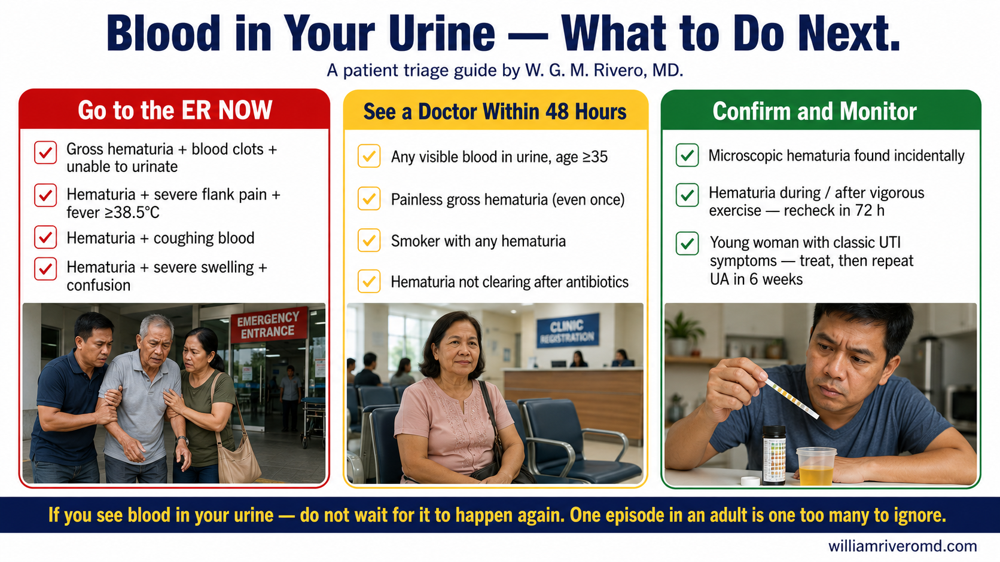
Summary — Your Personal Action PlanBuod — Ang Inyong Personal na Plano ng AksyonBuod — Ang Imong Personal nga Plano sa Aksyon Buod — Ing Inyu Personal a Plano ning Aksyon
| Your situationAng inyong sitwasyonAng imong sitwasyon Ing inyu sitwasyon | What to doAno ang gagawinUnsa ang buhaton Ano ing gagawin | UrgencyPagkaapurahanPagkaapura Pagkaapurahan |
|---|---|---|
| Visible blood in urine, first time, age <35, no other symptomsNakikitang dugo sa ihi, unang beses, edad <35, walang ibang sintomasMakita nga dugo sa ihi, unang higayon, edad <35, walay ubang sintomas Nakikitang daya king ihi, unang beses, edad <35, alang ibang sintomas | See your doctor within 24–48 h. Do not wait and hope it goes away.Kumonsulta sa inyong doktor sa loob ng 24–48 oras. Huwag maghintay at umasa na mawawala ito.Mangonsulta sa imong doktor sulod sa 24–48 ka oras. Ayaw maghuwat ug mag-asa nga mawala kini. Kumonsulta king inyu doktor king loob ning 24–48 oras. Eka maghintay at umasa a mawawala ini. | Within 48 hSa loob ng 48 orasSulod sa 48 ka oras King loob ning 48 oras |
| Visible blood in urine, age ≥35 or any risk factors (smoking, dyes)Nakikitang dugo sa ihi, edad ≥35 o may anumang risk factor (paninigarilyo, tina)Makita nga dugo sa ihi, edad ≥35 o adunay bisan unsang risk factor (sigarilyo, tinaga) Nakikitang daya king ihi, edad ≥35 o atin anumang risk factor (paninigarilyo, tina) | Same-day GP visit or ER. Cystoscopy referral should be made at this visit.Pagbisita sa GP o ER sa parehong araw. Ang referral para sa cystoscopy ay dapat gawin sa pagbisitang ito.Pagbisita sa GP o ER sa parehas nga adlaw. Ang referral alang sa cystoscopy angay buhaton sa pagbisitang kini. Pagbisita king GP o ER king parehong aldo. Ing referral para king cystoscopy ya dapat gawin king pagbisitang ini. | Same dayParehong arawParehas nga adlaw Parehong aldo |
| Microscopic hematuria found incidentally on routine urinalysisMicroscopic hematuria na natuklasan nang hindi sinasadya sa routine urinalysisMicroscopic hematuria nga nakit-an sa walay tuyo sa routine urinalysis Microscopic hematuria a natuklasan nang ali sinasadya king routine urinalysis | Confirm with a repeat mid-stream urine in 6 weeks. If persistent, workup as above.Kumpirmahin sa pag-uulit ng mid-stream urine sa loob ng 6 linggo. Kung nagpapatuloy, mag-workup tulad ng nabanggit.Kumpirmahi sa pagbalik sa mid-stream urine sulod sa 6 ka semana. Kon nagpadayon, mag-workup sama sa gisulti. Kumpirmahin king pag-uulit ning mid-stream urine king loob ning 6 lutu. Nung nagpapatuloy, mag-workup tulad ning nabanggit. | Within 6 weeksSa loob ng 6 linggoSulod sa 6 ka semana King loob ning 6 lutu |
| Hematuria + dysuria + frequency, young womanHematuria + masakit na pag-ihi + madalas na pag-ihi, batang babaeHematuria + masakit nga pag-ihi + kanunay nga pag-ihi, batan-ong babaye Hematuria + masakit a pag-ihi + madalas a pag-ihi, batang babae | Urine culture + empiric antibiotics. Repeat UA in 6 weeks after treatment.Urine culture + empiric antibiotics. Ulitin ang UA 6 linggo pagkatapos ng paggamot.Urine culture + empiric antibiotics. Balikbalikon ang UA 6 ka semana pagkahuman sa pagtambal. Urine culture + empiric antibiotics. Ulitin ing UA 6 lutu kapabanuan ning paggamut. | Within 48 hSa loob ng 48 orasSulod sa 48 ka oras King loob ning 48 oras |
| Recurrent hematuria during or after every throat infectionPaulit-ulit na hematuria sa panahon ng o pagkatapos ng bawat impeksyon sa lalamunanNagbalikbalik nga hematuria sa panahon sa o pagkahuman sa matag impeksyon sa tutunlan Paulit-ulit a hematuria king panahon ning o kapabanuan ning bawat impeksyon king lalamunan | Nephrology referral for IgAN workup. Do not ignore recurring episodes.Nephrology referral para sa IgAN workup. Huwag balewalain ang paulit-ulit na mga episode.Nephrology referral alang sa IgAN workup. Ayaw pabayai ang nagbalikbalik nga mga episode. Nephrology referral para king IgAN workup. Eka balewalain ing paulit-ulit a deng episode. | Within 1–2 weeksSa loob ng 1–2 linggoSulod sa 1–2 ka semana King loob ning 1–2 lutu |
| Blood clots, unable to urinate, severe painMga clot ng dugo, hindi makaihi, matinding sakitMga clot sa dugo, dili makaihi, grabe nga sakit Deng clot ning daya, ali makaihi, matinding sakit | Go to the ER now.Pumunta sa ER ngayon.Adto sa ER karon. Pumunta king ER ngayon. | EmergencyEmergencyEmergency Emergency |
The bottom lineAng buodAng konklusyon Ing buod
Blood in the urine is never a color problem — it is an information problem. The location (gross vs. microscopic), timing (during infection vs. weeks after), accompanying symptoms (pain vs. painless), and cell morphology (dysmorphic vs. isomorphic) together tell a story that leads to the correct diagnosis. The most dangerous thing you can do is wait and see if it happens again. One episode of unexplained hematuria in an adult is one episode too many to ignore.Ang dugo sa ihi ay hindi kailanman isang problema sa kulay — ito ay isang problema sa impormasyon. Ang lokasyon (gross vs. microscopic), timing (sa panahon ng impeksyon vs. ilang linggo pagkatapos), mga kasamang sintomas (may sakit vs. walang sakit), at cell morphology (dysmorphic vs. isomorphic) ay magkasamang nagkukuwento na humahantong sa tamang diyagnosis. Ang pinaka-mapanganib na magagawa ninyo ay maghintay at tingnan kung mauulit ito. Ang isang episode ng hindi maipaliwanag na hematuria sa isang adulto ay isang episode na masyadong marami para balewalain.Ang dugo sa ihi dili gayud usa ka problema sa kolor — kini usa ka problema sa impormasyon. Ang lokasyon (gross vs. microscopic), timing (sa panahon sa impeksyon vs. pipila ka semana pagkahuman), mga kauban nga sintomas (may sakit vs. walay sakit), ug cell morphology (dysmorphic vs. isomorphic) magkasamang nagsaysay og sugilanon nga nagdala sa husto nga diyagnosis. Ang labing mapeligro nga imong mahimo mao ang maghuwat ug tan-awon kon mahitabo kini pag-usab. Ang usa ka episode sa dili mapasabut nga hematuria sa usa ka hamtong usa ka episode nga daghan kaayo para pabayaan. Ing daya king ihi ya ali kailanman metung a problema king kulay — ini ya metung a problema king impormasyon. Ing lokasyon (gross vs. microscopic), timing (king panahon ning impeksyon vs. ilang lutu kapabanuan), deng kasamang sintomas (atin sakit vs. alang sakit), at cell morphology (dysmorphic vs. isomorphic) ya magkasamang nagkukuwento a humahantong king tamang diyagnosis. Ing pinaka-mapanganib a magagawa ninyo ya maghintay at tingnan nung mauulit ini. Ing metung a episode ning ali maipaliwanag a hematuria king metung a adulto ya metung a episode a masyadong dacal para balewalain.
Hematuria — Evaluation Framework
A nine-step clinical framework for the systematic evaluation of hematuria — from first-contact triage to long-term follow-up. Covers pseudo-hematuria exclusion, the pivotal glomerular/non-glomerular bifurcation, nephrology pathway (GN serology, IgAN management, biopsy protocol), urology pathway (urothelial risk stratification, cystoscopy and imaging indications), integrated referral thresholds, and monitoring for patients without a definitive diagnosis. Philippine practice context and availability notes throughout.
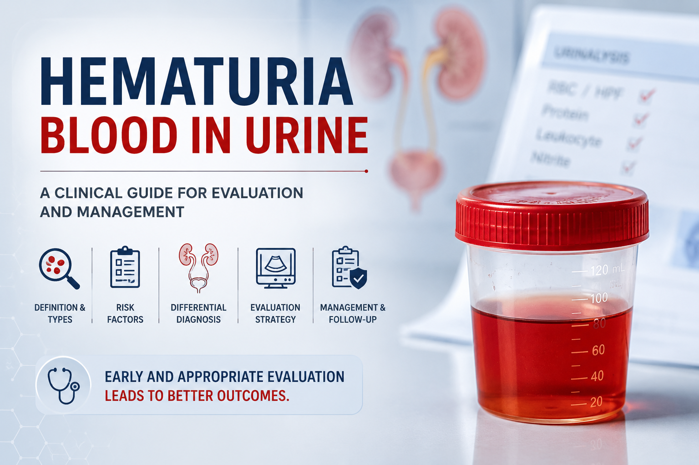
A Systematic 9-Step Clinical Framework
Hematuria is one of the most common referral triggers in nephrology and urology — and one of the most frequently mishandled. The fundamental clinical error is treating hematuria as a single entity rather than as a symptom that immediately bifurcates into two completely divergent pathways. Getting the first decision right — gross versus microscopic, and glomerular versus non-glomerular — determines every subsequent step. Conflating the two pathways delays cancer diagnosis in one direction and delays immunosuppression in the other.
This reference is organized as nine sequential steps. Steps 1–2 apply to all presentations: confirm true hematuria, classify the presentation, and make the pivotal glomerular/non-glomerular distinction. Steps 3–5 cover the nephrology pathway (glomerular origin confirmed): syndrome-driven GN serology, IgA nephropathy risk stratification and treatment, and kidney biopsy protocol. Steps 6–7 cover the urology pathway (non-glomerular): urothelial malignancy risk stratification and cystoscopy/imaging indications. Steps 8–9 complete the framework: integrated referral thresholds and long-term monitoring for patients without a definitive diagnosis.
Before any workup — exclude pseudo-hematuria
Confirm true hematuria with urine microscopy (≥3 RBC/hpf on a fresh, properly spun mid-stream specimen). A positive dipstick without RBCs on microscopy indicates myoglobinuria (rhabdomyolysis), hemoglobinuria (haemolysis), or dietary/drug pigmenturia (beets, rifampicin, phenazopyridine, senna). In premenopausal women, menstrual contamination must be excluded — repeat with a catheterised or post-menstrual specimen. Dipstick alone is insufficient to confirm or initiate workup for hematuria.
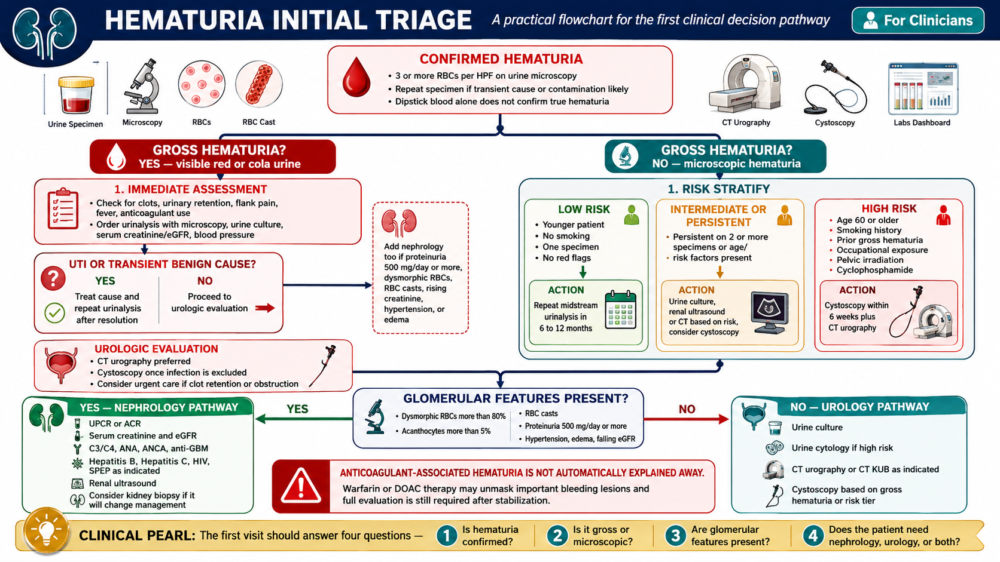
| Cause category | Common entities | Distinguishing feature → pathway |
|---|---|---|
| Glomerular | IgA nephropathy, lupus nephritis, ANCA vasculitis, anti-GBM disease, PSGN, MPGN, thin basement membrane nephropathy, Alport syndrome | Dysmorphic RBCs, RBC casts, or proteinuria ≥500 mg/day → Nephrology pathway (Steps 3–5) |
| Non-glomerular | Bladder carcinoma, upper tract urothelial CA, renal cell carcinoma, urolithiasis, BPH, UTI, radiation cystitis, aristolochic acid nephropathy | Eumorphic RBCs, absent or trace proteinuria, gross hematuria with clots, urological risk factors → Urology pathway (Steps 6–7) |
| Medical / systemic | Sickle cell trait, hypercalciuria, papillary necrosis (NSAIDs, diabetes), coagulopathy | Pathway determined by RBC morphology and risk profile at Steps 1–2 |
| Pseudo-hematuria | Myoglobinuria, hemoglobinuria, beets, rifampicin, phenazopyridine, menstrual contamination | Dipstick+ but <3 RBC/hpf on microscopy — no hematuria workup; address underlying cause |
Glomerular vs. Non-Glomerular — The Decision That Drives Everything
Every hematuria evaluation pivots on a single question: is the bleeding from the glomerulus or from the urothelium? The answer determines the entire subsequent pathway — nephrology (biopsy + immunology) vs. urology (cystoscopy + CT urography). Phase contrast urine microscopy is the most powerful triage test; acanthocytes >5% have 98% specificity for glomerulonephritis. In the Philippines, this is available at NKTI and most university nephrology centres. When unavailable, proteinuria ≥1+ on dipstick with dysmorphic RBCs on bright-field microscopy is a sufficient trigger for nephrology referral.
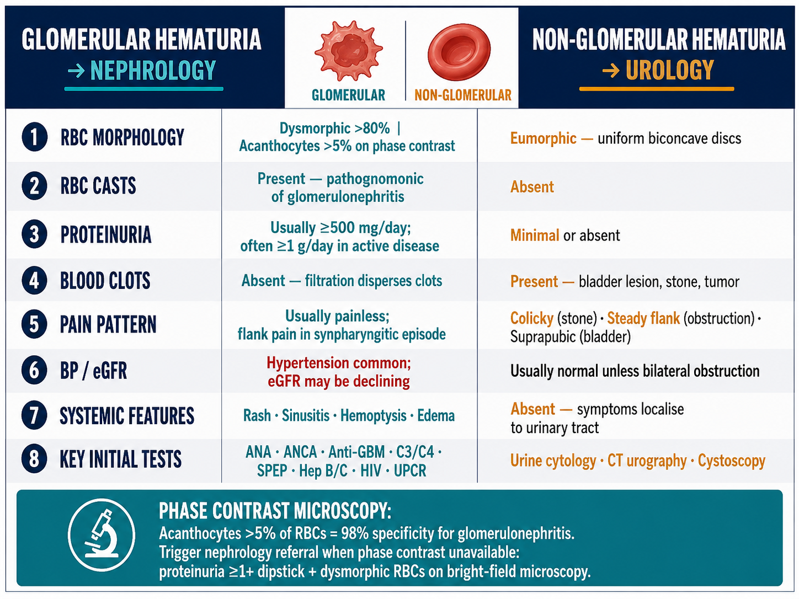
| Feature | Glomerular (→ Nephrology) | Non-Glomerular (→ Urology) |
|---|---|---|
| RBC morphology | Dysmorphic (>80%), acanthocytes (>5%) — phase contrast microscopy | Eumorphic (isomorphic), uniform biconcave discs |
| RBC casts | Present — pathognomonic of glomerulonephritis | Absent |
| Proteinuria | Usually ≥500 mg/day; often ≥1 g/day in active GN | Minimal or absent; if present, likely contamination |
| Blood clots | Absent — glomerular filtration breaks up clots | Present in bladder/ureteral lesions, stones, tumor |
| Pain pattern | Usually painless; flank pain suggests IgAN synpharyngitic episode or cortical necrosis | Colicky (stone), steady flank (obstruction), suprapubic (bladder) |
| BP / eGFR | Hypertension common; eGFR may be declining | Usually normal unless bilateral obstruction |
| Systemic features | Rash (SLE, HSP), sinusitis/hemoptysis (ANCA), edema (nephrotic overlap) | Absent systemic features; symptoms localise to urinary tract |
| Key initial tests | ANA, ANCA, anti-GBM, C3/C4, SPEP, cryoglobulins, Hep B sAg, anti-HCV, HIV; UPCR | Urine cytology; CT urography; cystoscopy |
Where this step leads
Glomerular features confirmed (dysmorphic RBCs >80%, acanthocytes >5%, RBC casts, or proteinuria ≥500 mg/day): proceed to the Nephrology Pathway — Steps 3–5 (GN serology → IgAN/disease-specific management → biopsy).
No glomerular features (eumorphic RBCs, absent or trace proteinuria, gross hematuria, urological risk factors): proceed to the Urology Pathway — Steps 6–7 (urothelial risk stratification → cystoscopy + upper tract imaging).
Workup Pathway by Presentation Type
With the pivotal glomerular/non-glomerular distinction established in Step 1, the specific evaluation order depends on how the hematuria presents. The table below maps each presentation type to the appropriate first tests, imaging, endoscopy, and specialist referral. Gross hematuria always requires both cystoscopy and CT urography regardless of age. Microscopic hematuria with glomerular features bypasses the urological workup entirely and goes directly to the nephrology pathway.
| Presentation | First Step | Imaging | Endoscopy | Specialist |
|---|---|---|---|---|
| Gross hematuria — any age, any sex | UA microscopy + urine culture to exclude UTI; creatinine, BP | CT urography (unenhanced + nephrographic + excretory phases) | Cystoscopy — mandatory once UTI excluded | Urology (primary); Nephrology if dysmorphic RBCs or proteinuria ≥500 mg/day |
| Microscopic hematuria — low risk (female 35–50, no risk factors, one specimen) | Repeat mid-stream UA at 6–12 months; urine culture to exclude UTI | Defer unless persistent on repeat | Defer unless persistent or new risk factors | GP or nephrology; urology only if persistent ≥2 specimens |
| Microscopic hematuria — high risk (≥3 RBC/hpf, ≥2 specimens, age ≥60, smoking, pelvic irradiation, cyclophosphamide exposure) | UA microscopy + culture; creatinine; urine cytology if high-risk for urothelial CA | CT urography preferred; MR urography if renal impairment or contrast allergy | Cystoscopy within 6 weeks | Urology; Nephrology if glomerular features present |
| Microscopic hematuria + proteinuria ≥500 mg/day or dysmorphic RBCs or RBC casts | Full nephrology workup — ANA, ANCA, anti-GBM, C3/C4, SPEP, Hep B/C, HIV | Renal ultrasound (size, echogenicity, obstruction) | Not indicated — glomerular origin confirmed | Nephrology; consider early biopsy if AKI or nephritic syndrome |
Anticoagulant-associated hematuria — do not dismiss
Hematuria in a patient on anticoagulation (warfarin, DOAC) at therapeutic levels is NOT explained by the anticoagulant alone. AUA 2020 explicitly states full urological evaluation is still required — anticoagulation unmasks, not causes, bleeding lesions. Document INR/anti-Xa; if supratherapeutic, correct first, then evaluate.
GN Serology Panel — Organized by Clinical Syndrome
Once glomerular hematuria is established (dysmorphic RBCs, RBC casts, or proteinuria ≥500 mg/day), the serologic workup should be syndrome-driven — not shotgun. Ordering every autoimmune test simultaneously delays interpretation and increases false-positive noise. The table below organizes the panel by the presenting clinical syndrome.
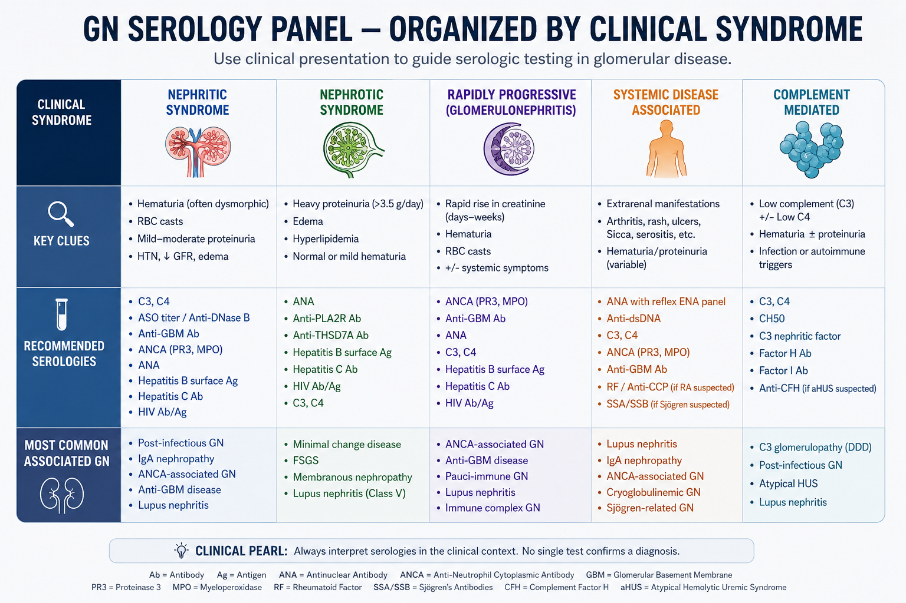
| Clinical Syndrome | First-Tier Tests | Second-Tier / Confirmatory | Likely Diagnosis |
|---|---|---|---|
| Isolated glomerular hematuria No proteinuria, normal eGFR, normal BP, young patient |
Phase-contrast urine microscopy, UPCR, serum creatinine, BP series | Consider genetic testing (COL4A3/4/5) before biopsy in young patients with family history of hematuria | Thin basement membrane nephropathy (TBMN), early IgAN, Alport spectrum |
| Nephritic syndrome Hematuria + proteinuria + hypertension ± AKI |
C3, C4, ANA, ANCA (MPO/PR3), anti-GBM, SPEP, Hep B sAg, anti-HCV, HIV, ASO/streptozyme | Anti-dsDNA, anti-Sm (if ANA+), ANCA IIF + ELISA reflex, cryoglobulins, anti-PLA2R (if proteinuria dominates) | IgAN, lupus nephritis, PSGN, MPGN, ANCA vasculitis, cryoglobulinemia |
| Pulmonary-renal syndrome Hematuria + hemoptysis ± rapid AKI |
Anti-GBM antibody (ELISA), ANCA MPO + PR3, urgent chest X-ray / CT | Bronchoscopy BAL (hemosiderin-laden macrophages), renal biopsy (linear IgG = anti-GBM; pauci-immune = ANCA) | Anti-GBM disease (Goodpasture), ANCA vasculitis (GPA, MPA), rarely SLE |
| Hypocomplementemic nephritic Low C3, normal or low C4, post-infection history |
C3, C4, ASO, anti-DNase B, streptozyme, throat culture, hepatitis panel | C3 nephritic factor, Factor H/I levels (if C3 remains low after 8 weeks — suspect C3GN or MPGN type II) | PSGN (C3 normalises ≤8 wks), C3 glomerulopathy, hepatitis C-associated MPGN |
| SLE-suspected Young female, rash, arthralgia, serositis |
ANA, anti-dsDNA, C3, C4, anti-Sm, urinalysis, UPCR, CBC | Antiphospholipid antibodies (aCL, anti-β2GP1, lupus anticoagulant), direct Coombs, renal biopsy for WHO/ISN-RPS class | Lupus nephritis (Class III/IV most common with hematuria) |
| IgA vasculitis (HSP) Palpable purpura (buttocks/legs), arthralgia, abdominal pain, hematuria |
Urinalysis, UPCR, creatinine, IgA level (elevated in ~50%), skin biopsy (IgA deposits) | Renal biopsy if UPCR >0.5 or AKI (identical to IgAN on light microscopy; IF shows IgA) | IgA vasculitis nephritis (formerly Henoch-Schönlein purpura nephritis) |
Complement interpretation pitfall
In PSGN, C3 is consumed but returns to normal within 6–8 weeks. If C3 remains low at 8 weeks, this is NOT PSGN — consider C3 glomerulopathy (C3G), MPGN, or lupus nephritis. Persistently low C4 with normal C3 favors hereditary complement deficiency or SLE (C4 null alleles common in Filipinos). Do not discharge a hypocomplementemic patient without 8-week C3 repeat.
Philippine context — serologic test availability
ANCA (MPO + PR3), anti-GBM, anti-dsDNA, C3/C4, and Hep B/C panels are available at PGH, NKTI, and all major private tertiary centers. C3 nephritic factor and genetic panel (COL4A3/4/5) are available at selected centers (St. Luke's, Asian Hospital, Makati Medical Center) and via referral to NKTI. Anti-PLA2R for membranous nephropathy is available at PGH and select private labs at ₱1,500–₱2,500.
IgA Nephropathy — Diagnosis, Oxford MEST-C Scoring & Treatment Algorithm
IgAN is the most common primary glomerulonephritis worldwide and disproportionately affects Asian populations. It accounts for an estimated 30–40% of primary GN biopsies in the Philippines. The therapeutic landscape changed dramatically in 2021–2024 with SGLT2 inhibitors, sparsentan, and targeted-release budesonide reaching approval — making updated risk stratification essential before any treatment decision.
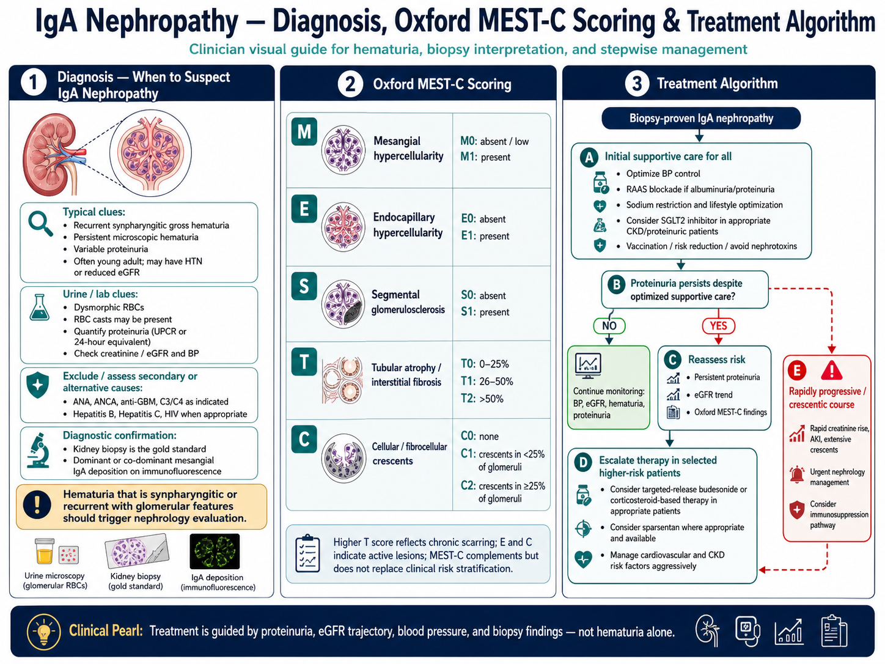
Oxford MEST-C Scoring
| Variable | Score 0 | Score 1 | Score 2 | Prognostic Weight |
|---|---|---|---|---|
| M — Mesangial hypercellularity | ≤50% glomeruli with mesangial cells >4/mesangial area | >50% glomeruli | — | M1 independently predicts GFR loss in patients not on immunosuppression |
| E — Endocapillary proliferation | Absent | Present in ≥1 glomerulus | — | E1 predicts response to corticosteroids; may modify treatment decision |
| S — Segmental glomerulosclerosis | Absent | Any segmental sclerosis, adhesion, or tip lesion | — | S1 associated with higher proteinuria and GFR decline |
| T — Tubular atrophy / Interstitial fibrosis | <25% cortical area | 25–50% | >50% | T2 is the strongest histologic predictor of ESRD; T0 has best prognosis |
| C — Crescents | Absent | <25% of glomeruli (cellular or fibrocellular) | ≥25% of glomeruli | C2 = rapidly progressive IgAN; requires urgent aggressive therapy |
Risk Stratification & Treatment Algorithm (KDIGO 2021 / 2024 Update)
| Risk Category | Clinical Criteria | First-Line Treatment | Escalation |
|---|---|---|---|
| Low risk | UPCR <0.5 g/g, eGFR >60, BP controlled, no crescents, T0 | Optimized supportive care only: ACEi or ARB to UPCR <0.5 and BP <130/80; lifestyle (low Na, smoking cessation) | Add SGLT2i if eGFR ≥20 and CKD; re-evaluate at 3 months |
| Moderate risk | UPCR 0.5–1.0 g/g after 3 months optimized care, OR eGFR 30–60, OR M1E1 histology | Optimized supportive + SGLT2i (dapagliflozin 10 mg/day or empagliflozin 10 mg/day) | Targeted-release budesonide (Nefecon 16 mg/day × 9 months) if UPCR persists >0.8 g/g after 3 months of full supportive care; consider corticosteroids |
| High risk | UPCR >1.0 g/g despite 3 months optimized care, OR eGFR declining ≥30% over 2 years, OR C1–C2 crescents | Optimized supportive + SGLT2i + consider corticosteroid course: prednisolone 0.8 mg/kg/day × 2 months then taper over 4–6 months; OR IV methylprednisolone 1 g/day × 3 days at months 1, 3, 5 (Pozzi protocol) | Sparsentan 400 mg/day (if available) — PROTECT trial showed superiority over irbesartan for proteinuria reduction and eGFR preservation. Cyclophosphamide only for C2 crescentic or RPGN-pattern IgAN |
| Crescentic / RPGN | C2 (≥25% crescents), AKI, rapid eGFR loss (>50% in <3 months) | IV methylprednisolone 500–1000 mg/day × 3 days, then high-dose oral prednisolone + cyclophosphamide (oral 2 mg/kg/day or IV pulse × 6 cycles) | Plasma exchange is NOT recommended for IgAN-RPGN (unlike anti-GBM disease) |
Optimized supportive care — the mandatory foundation
No immunosuppression should be started without first achieving optimized supportive care for a minimum of 3 months. This means: (1) ACEi or ARB at maximum tolerated dose, (2) BP <130/80 mmHg (or <125/75 if UPCR >1 g/g), (3) SGLT2i if eGFR ≥20, (4) dietary sodium <2 g/day, (5) smoking cessation. Proteinuria often falls to low-risk levels with supportive care alone, avoiding unnecessary immunosuppression — the STOP-IgAN trial demonstrated this clearly.
Philippine availability note
Sparsentan (Filspari®) is FDA-approved in the US (February 2023) and EU but is not yet registered in the Philippines as of mid-2026. Targeted-release budesonide (Nefecon/Tarpeyo®) is similarly unavailable locally. Standard corticosteroid protocols (Pozzi) and ACEi/ARB remain the mainstay. Dapagliflozin (Forxiga) is widely available in the Philippines at ₱60–₱90/tablet; empagliflozin (Jardiance) at ₱70–₱100/tablet. PhilHealth Z-benefit covers dialysis but not GN immunosuppression — patient cost-sharing for corticosteroid courses remains modest.
Kidney Biopsy — Indications, Contraindications & Pre-Procedural Protocol
Renal biopsy is the definitive diagnostic tool for glomerular hematuria — but it carries a 1–3% risk of clinically significant bleeding and a <0.1% risk of nephrectomy or death. It should be reserved for situations where the histologic result will change management. Isolated hematuria with no proteinuria, normal eGFR, and normal BP rarely requires biopsy; the yield is low and the result (usually TBMN) rarely changes management.
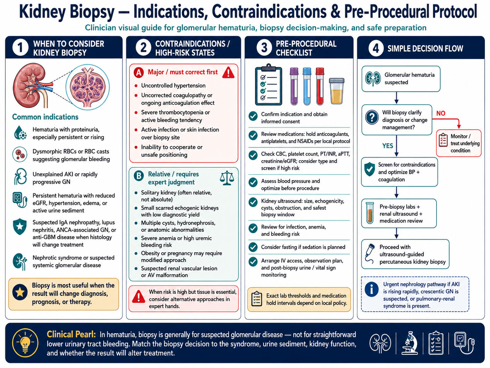
Indications (biopsy is likely to change management)
| Indication | Urgency | Rationale |
|---|---|---|
| Glomerular hematuria + UPCR >0.5 g/g, persistent >3 months | Elective (within 2–4 weeks) | Histologic diagnosis directs immunosuppression decision; separates IgAN from lupus, FSGS, MN |
| Rapidly progressive GN (AKI + active sediment + RBC casts) | Urgent (within 24–48 h) | Crescentic GN — immunosuppression window is narrow; delay worsens outcome |
| Nephrotic syndrome with hematuria (mixed nephritic-nephrotic) | Elective (within 1–2 weeks) | MPGN, lupus Class III/IV, C3GN — all require histology for classification |
| Unexplained AKI with active urine sediment after ruling out pre-renal and obstructive causes | Urgent | Acute interstitial nephritis vs. crescentic GN — different treatment; delay causes irreversible fibrosis |
| Suspected lupus nephritis (any class, especially with hematuria) | Elective (within 1–2 weeks) | ISN/RPS class determines mycophenolate vs. cyclophosphamide induction; class I/II may not need immunosuppression |
| Familial hematuria with progression (proteinuria, HTN, or eGFR decline) | Elective (non-urgent) | EM for GBM thickness; IF for IgA; genetic testing preferred first in young males (Alport) |
Contraindications
| Contraindication | Type | Management before biopsy |
|---|---|---|
| Uncontrolled hypertension (BP >160/100 at time of procedure) | Relative | Normalize BP first; reschedule. Do not biopsy with BP >160/100. |
| Coagulopathy (INR >1.5, PTT >1.5× ULN) | Relative | Correct with FFP or vitamin K. Proceed once INR <1.5. |
| Thrombocytopenia (platelets <100 × 10⁹/L) | Relative | Platelet transfusion to >100 before procedure; maintain for 4 h post-biopsy |
| Active anticoagulation (warfarin, DOAC, LMWH) | Relative | Hold warfarin 5 days (bridge if high thrombotic risk); hold DOAC 48 h (or longer if CrCl <30); hold aspirin 5–7 days; hold clopidogrel 7 days |
| Single functioning kidney | Relative | Not absolute — experienced operator + real-time USS guidance; ensure patient counselling and post-biopsy monitoring plan in place |
| Active UTI | Absolute | Treat and confirm clearance before biopsy |
| Uncooperative patient (unable to hold breath for 10–15 seconds) | Absolute | General anaesthesia or consider open surgical biopsy if diagnosis critical |
Pre-Biopsy Checklist
Pre-procedure (day before + day of)
- CBC with platelets, PT, APTT, INR — within 48 hours of procedure
- Blood type and screen (crossmatch if high-risk single kidney or coagulopathy)
- Serum creatinine and electrolytes
- Renal ultrasound same day — document kidney size (cm), echogenicity, cortical thickness, bilateral kidneys present, absence of hydronephrosis, no perirenal collection
- Hold anticoagulants per protocol above (confirmed day-of)
- IV access secured — 18G or larger
- Nil by mouth for light snack if IV sedation planned (not routinely needed)
- Patient consent — explain 1–3% transfusion risk, <0.1% nephrectomy risk, post-biopsy monitoring requirements
- Plan for post-biopsy monitoring: 4–6 h supine bed rest, BP + HR q30min × 4 h, urine colour check each void, repeat USS at 4 h if gross hematuria or hypotension
Tissue handling — maximise yield
A minimum of 10 glomeruli (ideally ≥20) is needed for adequate Oxford MEST-C scoring. Request: (1) light microscopy (PAS, silver methenamine, Masson trichrome, H&E), (2) direct immunofluorescence (IgA, IgG, IgM, C3, C1q, fibrin, kappa, lambda), (3) electron microscopy if TBMN, Alport, or membranous suspected. In the Philippines, NKTI and PGH pathology provide full IF; EM is available at NKTI and select private laboratories. Arrange in advance — tissue must reach the EM lab in glutaraldehyde within 30 min of biopsy.
Urothelial Malignancy — Risk Stratification & Workup Pathway
Bladder cancer is the 10th most common cancer in the Philippines (GLOBOCAN 2022). Hematuria — gross or microscopic — is the presenting symptom in >85% of bladder cancers. The AUA 2020 Microhematuria Guidelines introduced a formal three-tier risk stratification replacing the previous binary model. Philippine clinicians should be aware of aristolochic acid nephropathy as a locally significant risk factor for upper tract urothelial carcinoma.
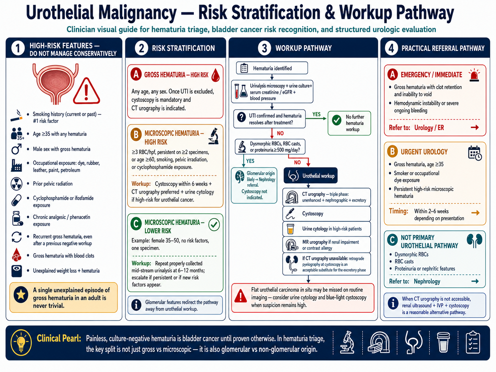
| Risk Category | Defining Criteria | Recommended Workup | Timeline |
|---|---|---|---|
| Low Risk | Female age <50, OR male age <40; non-smoker; 3–10 RBC/hpf on single specimen; no other risk factors | Repeat UA in 6 months. If negative × 1 — discharge with instructions to return if gross hematuria develops. If persistent — step up to intermediate/high workup. | 6-month repeat UA; cystoscopy only if persistent |
| Intermediate Risk | Age 50–59 with any smoking history; OR age <50 with risk factor (see below); OR 11–25 RBC/hpf; OR ≥3 RBC/hpf on ≥2 specimens | Cystoscopy + CT urography (or MR urography if eGFR <45). Urine cytology if high-grade suspicion (smoker, occupational exposure). | Within 3 months |
| High Risk | Any gross hematuria (any age, any sex); OR age ≥60; OR smoking ≥10 pack-years; OR >25 RBC/hpf; OR occupational/cyclophosphamide/pelvic irradiation exposure; OR prior urothelial carcinoma | Cystoscopy + CT urography (mandatory). Urine cytology × 3 voided specimens. Blue-light cystoscopy if available (improves CIS detection by ~25%). | Within 6 weeks |
| Emergency Referral | Gross hematuria + clot retention + inability to void; OR gross hematuria with significant anemia (Hb <9) | Urology ER — bladder irrigation catheter, cystoscopic clot evacuation. Rule out renal pelvic tumour with CT urography after stabilisation. | Same day / ER |
Urothelial Carcinoma Risk Factors
| Risk Factor | Relative Risk | Philippine Relevance |
|---|---|---|
| Cigarette smoking | 4–6× vs. non-smoker | High prevalence in male Filipinos (27.3% adult male smoking rate, PSA 2021); leading modifiable risk factor |
| Aristolochic acid exposure (herbal medicines) | Up to 100× for upper tract urothelial CA | Philippine-specific concern: widely used in traditional remedies (e.g., tawas-based preparations, Chinese herbal teas containing Aristolochia). Aristolochic acid nephropathy causes a distinctive tubulointerstitial nephropathy + high-grade urothelial carcinoma of the renal pelvis and ureter. Ask specifically about herbal supplement use. |
| Occupational arylamines (rubber, dye, leather) | 4–5× | Shoe manufacturing (Marikina), textile, and rubber industries; occupational history often omitted in standard history-taking |
| Cyclophosphamide exposure | 4–9× | Post-treatment lupus nephritis or nephrotic syndrome patients on long-term cyclophosphamide; cumulative dose >30 g carries highest risk |
| Pelvic irradiation | 2–4× | Post-RT cervical cancer (high incidence in Philippines); latency 10–15 years post-irradiation |
| Chronic indwelling catheter | 2–5× | Squamous cell carcinoma of bladder; seen in chronic spinal cord injury patients with long-term catheterisation |
Urine cytology — use it selectively, not routinely
Sensitivity for detecting bladder cancer overall is only 35–65%; sensitivity for low-grade papillary tumour is <25% — a negative cytology does not exclude low-grade disease. However, sensitivity for high-grade TCC and carcinoma in situ (CIS) is 80–90%, which is exactly where cystoscopy most commonly misses lesions (flat CIS is invisible on white-light cystoscopy). Order urine cytology in high-risk patients: smokers, occupational exposure, gross hematuria, prior TCC. Collect three morning mid-stream voided specimens or a catheterised specimen. Not useful as a screening tool in low-risk patients.
Upper tract urothelial carcinoma (UTUC) — do not miss
UTUC (renal pelvis and ureter) accounts for ~10% of all urothelial cancers and is disproportionately associated with aristolochic acid exposure — a Philippine-relevant concern. CT urography (excretory phase) is the diagnostic standard; sensitivity ~80–90% for UTUC. Retrograde pyelography is indicated when CT urography shows a filling defect or when CT urography is non-diagnostic and clinical suspicion is high. Ureteroscopy with biopsy is the definitive diagnostic step if imaging is suspicious.
Cystoscopy & Upper Tract Imaging — When and Which
Cystoscopy and CT urography are complementary, not interchangeable. Cystoscopy visualises the urothelium from the bladder neck to the ureteral orifices; CT urography evaluates the upper tracts (renal parenchyma, renal pelvis, ureters). In the Philippines, CT urography (triple-phase) is available at most provincial hospitals; when unavailable, retrograde pyelography at cystoscopy is an acceptable substitute for the excretory phase. Blue-light cystoscopy, which improves carcinoma in situ (CIS) detection by ~25%, is available at NKTI and select private tertiary centres.
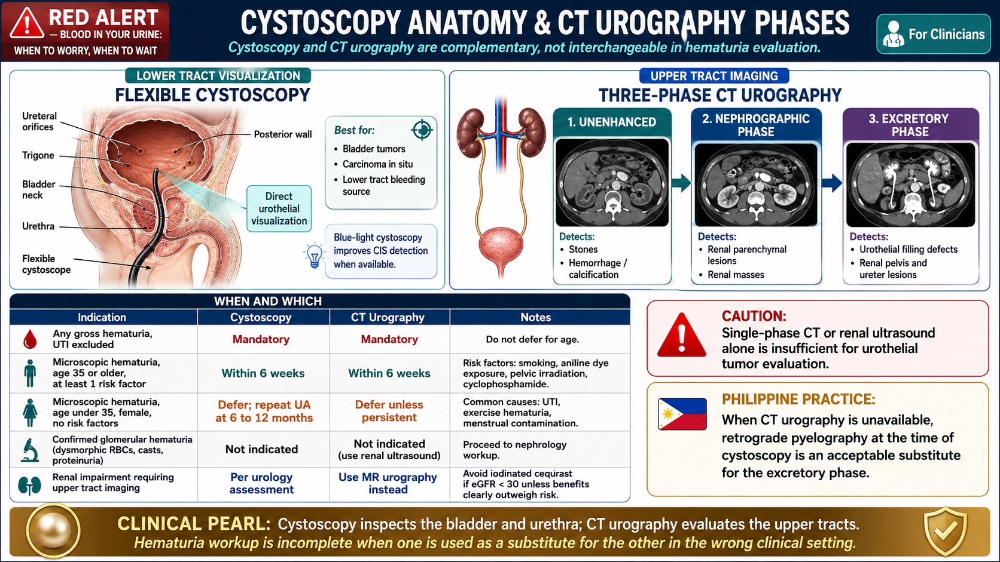
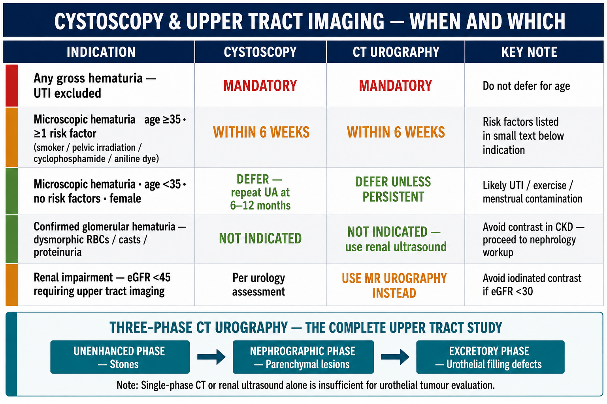
| Indication | Cystoscopy | CT Urography | Notes |
|---|---|---|---|
| Any gross hematuria, UTI excluded | Mandatory | Mandatory | Do not defer for age. Bladder cancer can present at any age. |
| Microscopic hematuria, age ≥35, ≥1 risk factor | Within 6 weeks | Within 6 weeks | Risk factors: smoking, aniline dye exposure, pelvic irradiation, cyclophosphamide |
| Microscopic hematuria, age <35, no risk factors, female | Defer; repeat UA at 6–12 mo | Defer unless persistent | Most common cause: UTI, exercise hematuria, menstrual contamination |
| Confirmed glomerular hematuria (dysmorphic RBCs, casts, proteinuria) | Not indicated | Not indicated (use renal USS) | Proceed to nephrology workup; avoid unnecessary contrast in CKD |
| Renal impairment (eGFR <45) requiring upper tract imaging | Per urology assessment | Use MR urography instead | Avoid iodinated contrast if eGFR <30 unless benefits clearly outweigh risk |
Three-phase CT urography — the standard upper tract study
Unenhanced (stones) + nephrographic (parenchymal lesions) + excretory phase (urothelial filling defects). Single-phase CT or renal USS alone is insufficient for urothelial tumour evaluation. In centres where CT urography is not available (common in provincial Philippines), retrograde pyelography at the time of cystoscopy is an acceptable substitute for the excretory phase.
Referral Thresholds & Special Situations
Referral decisions depend on urgency (emergency vs. elective), pathway (nephrology vs. urology vs. both), and local resource availability. The table below integrates findings from both pathways into actionable referral triggers. In the Philippine context: phase contrast microscopy and blue-light cystoscopy are available at NKTI, PGH, and select private tertiary centres. CT urography (₱6,000–₱14,000) remains a barrier in provincial settings — renal USS + IVP + cystoscopy is an acceptable substitute.
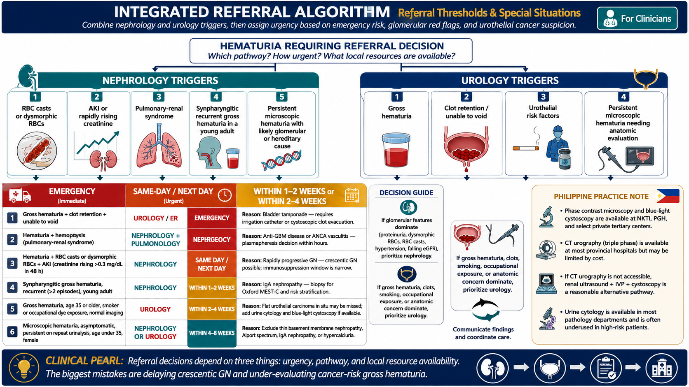
| Situation | Refer to | Urgency | Reason |
|---|---|---|---|
| Gross hematuria, clot retention, unable to void | Urology / ER | Emergency | Bladder tamponade — requires irrigation catheter or cystoscopic clot evacuation |
| Hematuria + RBC casts or dysmorphic RBCs + AKI (creatinine rising >0.3 mg/dL in 48 h) | Nephrology | Same day / next day | Rapidly progressive GN — crescentic GN possible; immunosuppression window is narrow |
| Hematuria + hemoptysis (pulmonary-renal syndrome) | Nephrology + Pulmonology | Emergency | Anti-GBM disease or ANCA vasculitis — plasmapheresis decision within hours |
| Synpharyngitic gross hematuria, recurrent (>2 episodes), young adult | Nephrology | Within 1–2 weeks | IgAN — biopsy for Oxford MEST-C, KDIGO 2021 risk stratification, consider sparsentan or corticosteroids |
| Gross hematuria, age ≥35, smoker or occupational dye exposure, normal imaging | Urology | Within 2–4 weeks | Flat urothelial carcinoma in situ — CT urography and cystoscopy may both miss it; urine cytology + blue-light cystoscopy if available |
| Microscopic hematuria, asymptomatic, persistent on repeat UA, age <35, female | Nephrology or Urology | Within 4–8 weeks | Exclude thin basement membrane nephropathy (Alport spectrum), IgAN, hypercalciuria |
Philippine practice note
Phase contrast microscopy and blue-light cystoscopy are available at NKTI, Philippine General Hospital, and select private tertiary centers. CT urography (triple phase) is available at most provincial hospitals but cost (₱6,000–₱14,000) remains a barrier. When CT urography is not accessible, renal ultrasound + IVP + cystoscopy is a reasonable alternative pathway. Urine cytology is available at most pathology departments and costs ₱400–₱800 — underutilised in high-risk patients.
Follow-Up Protocol — Persistent Microscopic Hematuria & Thin Basement Membrane Nephropathy
A significant proportion of patients with microscopic hematuria will complete a full urological and nephrological workup and remain without a definitive diagnosis. In this group, the most likely underlying entity is thin basement membrane nephropathy (TBMN) / Alport spectrum disease — largely benign in heterozygotes but with a minority risk of progression. The clinical challenge is identifying the progressor before irreversible proteinuria or eGFR decline develops.
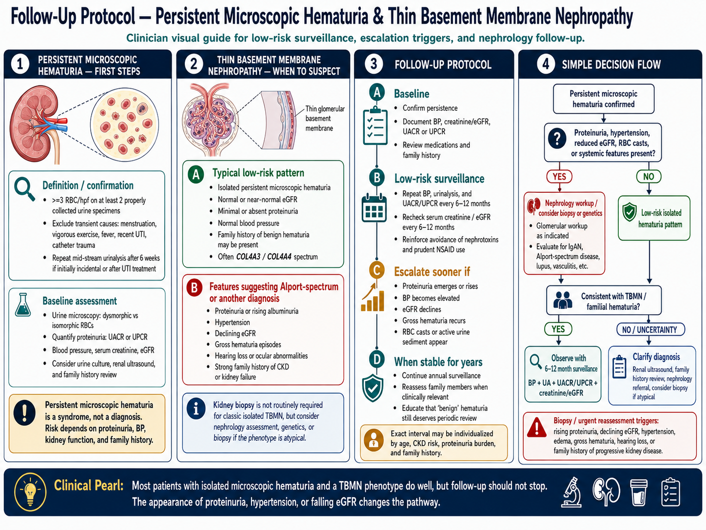
Thin Basement Membrane Nephropathy & Alport Spectrum — Clinical Framework
| Feature | TBMN (Heterozygous COL4A3/A4) | X-linked Alport (COL4A5, hemizygous male) | Autosomal Recessive Alport (Homozygous COL4A3/A4) |
|---|---|---|---|
| Hematuria | Persistent microscopic; episodic gross with exercise or intercurrent illness | Persistent microscopic from childhood; episodic gross | Persistent microscopic; gross common |
| Proteinuria | Usually absent; can develop with age (>40 years) | Develops in teens/20s; precedes eGFR decline | Early; can be heavy |
| Hearing loss | Absent or mild | Sensorineural; bilateral; 60–70% of affected males by age 30 | Present; often severe |
| Ocular findings | Absent | Anterior lenticonus (pathognomonic), maculopathy | Present |
| ESRD risk | <5% by age 60 (if truly heterozygous TBMN); higher if COL4A3/A4 compound het | ~50% by age 25, ~90% by age 40 (hemizygous male untreated) | ESRD by 2nd–3rd decade |
| GBM on EM | Diffuse thinning (<200 nm; normal 300–400 nm) | Lamellation, thickening, splitting (basket-weave) | Lamellation and splitting |
| Genetic test | COL4A3 or COL4A4 heterozygous variant | COL4A5 hemizygous pathogenic variant | COL4A3 or COL4A4 homozygous / compound het |
When TBMN is not benign — identifying progressors
TBMN progressors develop proteinuria (>500 mg/day) before eGFR decline. Annual UPCR is the single most important follow-up test. Red flags for progression: (1) family history of ESRD in a first-degree relative with hematuria; (2) development of hypertension; (3) new proteinuria on annual check; (4) COL4A3/A4 digenic or compound heterozygous mutations (reclassify as autosomal recessive Alport). These patients warrant nephrology referral, RAS blockade, and SGLT2i.
Monitoring Protocol — Isolated Microscopic Hematuria, No Definitive Diagnosis
| Timepoint | Tests | Action Trigger |
|---|---|---|
| Baseline | UA microscopy, UPCR, serum creatinine (eGFR), BP × 2 readings, renal USS | — |
| 6 months | UA microscopy, UPCR, BP, serum creatinine | If UPCR >0.5 g/g or eGFR decline >10%: nephrology referral + consider biopsy |
| 12 months | UA microscopy, UPCR, BP, serum creatinine; audiogram if family history of deafness | If hematuria resolved on ≥2 UAs: discharge or annual GP check |
| Annually (year 2–5) | UA, UPCR, eGFR, BP | New proteinuria, HTN, or eGFR fall → nephrology biopsy pathway; new gross hematuria → urology re-evaluation |
| After negative full urological workup | Repeat UA at 6 months + 12 months post-workup | 3 consecutive negative UAs → discharge (AUA 2020). Gross hematuria recurrence → re-refer urology regardless of prior normal workup. |
Genetic testing for Alport spectrum in the Philippines
COL4A3/A4/A5 sequencing is available at selected centers (The Medical City Genomics, St. Luke's BGC Genetics, Makati Medical Center, and via referral to NKTI collaborating laboratories). Cost ranges ₱15,000–₱45,000 depending on scope (panel vs. whole-exome). For a young male with isolated hematuria and a family history of male relatives developing renal failure, genetic testing is preferred over biopsy as the first diagnostic step — it avoids the procedural risk and provides prognostic information for family members simultaneously.
Hematuria Evaluation — Summary Visual Abstract
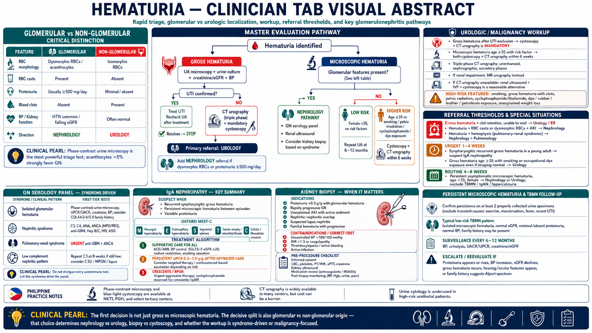
W Rivero, MD, FPCP, DPSN
Specialist in Internal Medicine, Nephrology, and Clinical Nutrition. Practicing integrative and evidence-based nephrology across Quezon City, Pampanga, and Bulacan.Espesyalista sa Panloob na Medisina, Nefrolohiya, at Klinikal na Nutrisyon. Nagpapraktis ng integratibo at ebidensya-batay na nefrolohiya sa Quezon City, Pampanga, at Bulacan.Espesyalista sa Internal nga Medisina, Nefrolohiya, ug Klinikal nga Nutrisyon. Nagpraktis og integratibo ug ebidensya-base nga nefrolohiya sa Quezon City, Pampanga, ug Bulacan.Espesyalista king Panloob na Medisina, Nefrolohiya, at Klinikal na Nutrisyon. Nagpapraktis ning integratibo at ebidensya-base na nefrolohiya sa Quezon City, Pampanga, at Bulacan.

Scan and saveI-scan at i-saveI-scan ug i-saveI-scan at i-save